42/50 lolos audit dan terpasang. Semua karakter dipilih dari entri dengan informasi lengkap. Ilustrasi adalah interpretasi artistik AI berdasarkan sumber riset.
Dzoavits
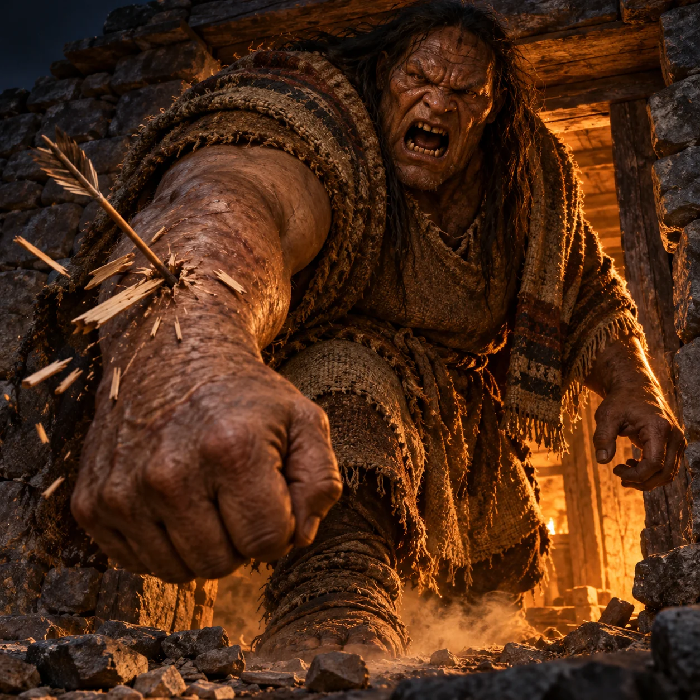
Ogre gigantik muncul dari rumah batu; panah pecah di lengannya.
Aura: Skala ogre gigantik c04 dan lengan kebal panah c05 memberi ancaman.
Audit ciri dan sumber
- [object Object]
- [object Object]
- [object Object]
Uji Sangar 7/7: subjek dominan, ancaman thumbnail, aksi menerjang, panah pecah c05, anatomi humanoid sesuai c04, tanpa teks, bukan manusia biasa.
Review sumberONE original square premium painterly cinematic Mitoloka illustration of Dzoavits, a gigantic Shoshone ogre dwelling in a stone house.
ANATOMY: one humanoid head, two arms, two legs, huge heavy ogre face and hands; opaque rough earth-brown woven tunic and blanket cloak. No horns or invented animal anatomy. [dzoavits-c04]
MOMENT: lurch forward through a massive stone doorway toward the viewer, one forearm thrust close to camera, cruel predatory stare downward, mouth open in a threatening roar.
POWER: an arrow physically shatters against the thick uninjured forearm, broken wooden pieces falling; this expresses the documented invulnerability rather than magic glow. [dzoavits-c05]
SCALE & CAMERA: extreme low angle; the gigantic ogre fills 85 percent of the square, tiny stone doorway rubble at its feet conveys size.
LIGHT & WEATHER: one low amber firelight source outside the doorway, rim light, dust kicked from stone threshold.
SURFACE: weathered leathery face, thick scarred skin, coarse opaque cloth, rough stone.
SETTING: massive stone house at nighttime. [dzoavits-c04]
MOOD: menacing and imposing, never cute, calm or decorative.
HARD CONSTRAINTS: no text, lettering, logo, border, frame or watermark; no extra heads, limbs or fingers; no design borrowed from film, game, anime or comic; no nudity or explicit gore; no generic glow aura, neon outline or energy ribbons.
Йĕрĕх
Menunggu gambar yang lolos audit
Enfield Monster
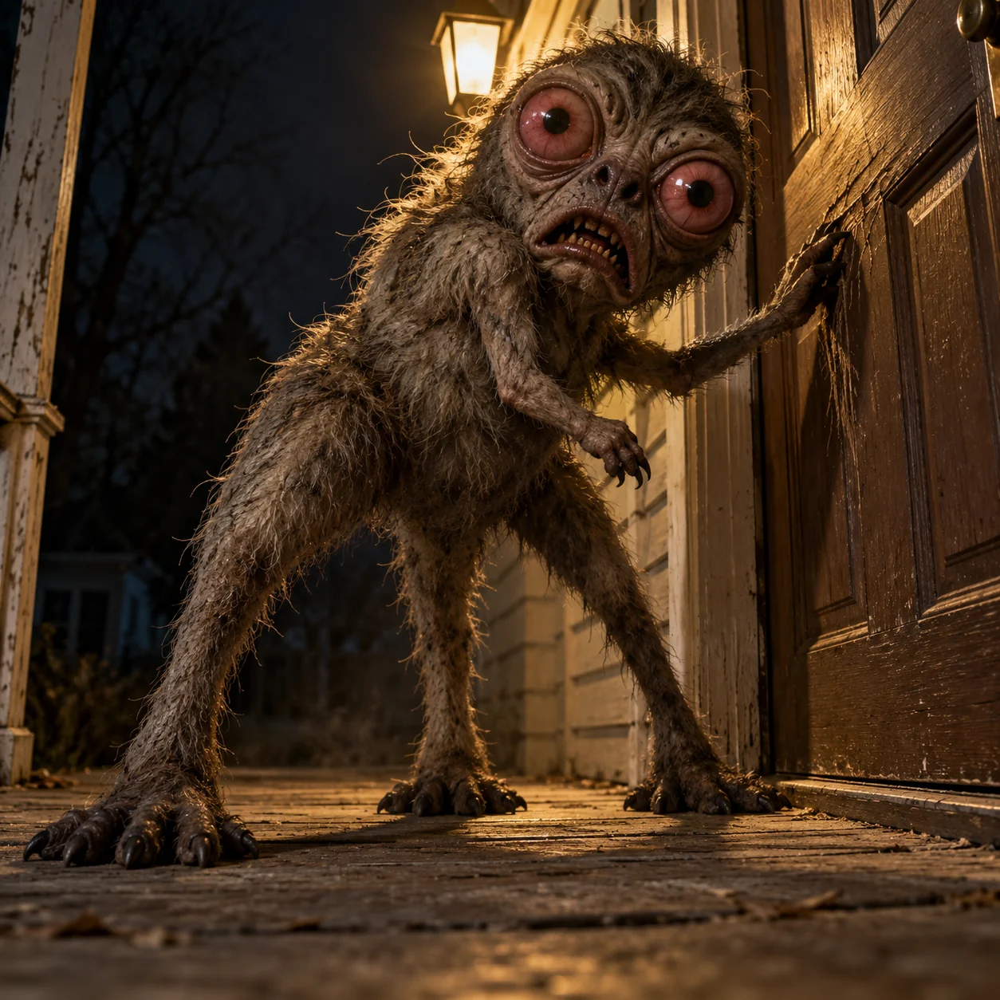
Laporan McDaniel: makhluk pendek tiga kaki dengan mata pink menggaruk pintu.
Aura: Keganjilan tiga kaki c05 dan kepala besar mata pink c06 mengancam tanpa efek rekaan.
Audit ciri dan sumber
- [object Object]
- [object Object]
Uji Sangar7/7 native dan200px: makhluk dominan menggaruk pintu; tepat3kaki terpisah,2lengan pendek,2mata pink besar,dirtygrayfur; tanpa efek/teks; uncanny bukanhewanbiasa.
Review sumberONE original square premium painterly cinematic Mitoloka illustration of the Enfield Monster, the reported three-legged creature at an Illinois front door.
ANATOMY: exactly THREE separate legs arranged left leg, central leg, right leg, all three clearly visible with separate feet on the threshold; exactly TWO very short arms attached high on its short compact dirty-gray hairy torso; one disproportionately large head, exactly two huge PINK eyes as wide as flashlights. Height four and a half feet, not giant. [enfield-monster-c05,c06]
MOMENT: scratch the wooden front door with one short arm, twisting its large head sharply toward the viewer, mouth tense and open; crouch on three widely spaced legs, each foot unobstructed.
POWER: no documented supernatural power; menace through uncanny anatomy, close framing and natural light only.
SCALE & CAMERA: very low close camera from porch floor; creature fills 85 percent of square; the three feet form a clear tripod across the lower third. No leg hidden behind another leg.
LIGHT & WEATHER: one warm porch lamp side-light, deep cool night shadows, natural airborne dust.
SURFACE: coarse matted dirty-gray fur, cracked porch wood, pink eyes reflective without emitting light.
SETTING: front door of a house in Enfield Illinois at night. [enfield-monster-c01,c04]
MOOD: unnerving and imposing, never cute or decorative.
HARD CONSTRAINTS: no text, lettering, logo, border, frame or watermark; exactly three legs and two short arms, no extra limbs; no film/game/anime/comic design; no nudity or explicit gore; no glow aura, neon outline, eye beams or energy ribbons.
Ergene iyesi
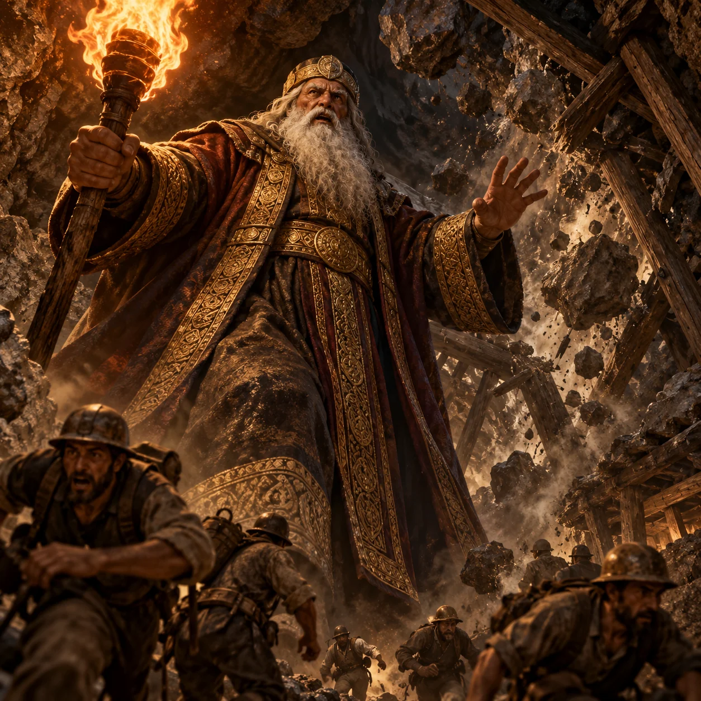
Shakhta Ata memperingatkan pekerja agar keluar dari tambang yang hendak runtuh.
Aura: Obor c07 dan tindakan melindungi dalam runtuhan c11 memberi kewibawaan.
Audit ciri dan sumber
- [object Object]
- [object Object]
- [object Object]
UjiSangar7/7native+200: sacredguardian mendominasi, skalamonumental jelas editorialalegori bukanfactsumber; oborc07, warncollapsec11, jubahupacara; 2arms1head, noextra/teks; tidaklagi ordinaryminer.
Review sumberONE original square premium painterly cinematic Mitoloka illustration of Ergene iyesi, a guardian of mines in its documented Shakhta Ata old-man manifestation.
ANATOMY: one old man's head, two arms, two legs, one hand carrying a blazing physical wooden torch; fully opaque layered sacred ceremonial robes with large antique-gold trim and a structured mantle, dignified elderly face, long silver beard as editorial styling. [ergene-iyesi-c07]
MOMENT: thrust the torch forward and raise the other open hand commanding miners to escape a collapsing tunnel; urgent authoritative expression, rise with sovereign composure out of the black mouth of the mine; a sacred guardian with an enormous solemn presence, not a ragged miner; the guardian fills the foreground.
POWER: no invented magic; large stones physically fall and roof beams split in an imminent mine collapse while the guardian warns workers away, based on its documented warning and protection. [ergene-iyesi-c11]
SCALE & CAMERA: extreme low angle; sacred monumental allegorical portrayal of the protective mine deity, towering from the bottom to top of the square with a vast torch; tiny miners at his knees flee into foreground. Monumental scale is editorial allegory, not a factual source claim.
LIGHT & WEATHER: torch is the only dominant light; amber flame rim, black cavern shadows, thick naturally stirred stone dust.
SURFACE: wrinkled human skin, coarse opaque cloth, soot, rough rock and timber.
SETTING: underground mine workings with veins of dull crystals and metals. [ergene-iyesi-c03]
MOOD: awe-inspiring protective authority, dignified and urgent, never evil, ordinary casual or decorative.
HARD CONSTRAINTS: no text, lettering, logo, border, frame or watermark; no extra heads, limbs or fingers; no film/game/anime/comic design; no nudity or explicit gore; no glowing crystals, no aura or energy ribbons.
Eritate-goromo
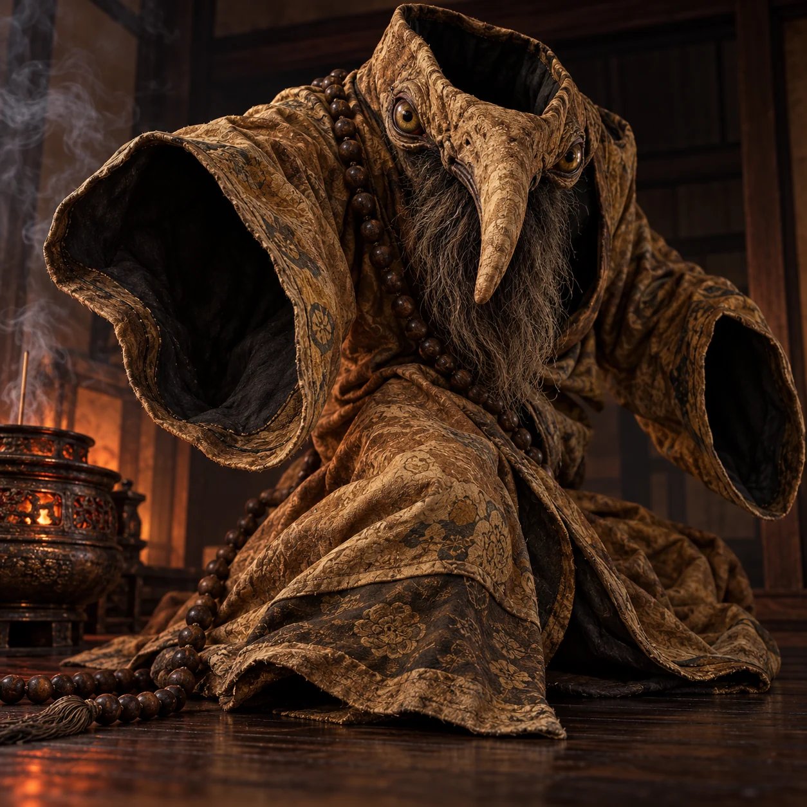
Varian kemudian: kerah jubah menjadi wajah bermata dan berjanggut.
Aura: Kerah menjadi hidung/paruh c02 dengan mata-janggut c05 menciptakan keganjilan.
Audit ciri dan sumber
- [object Object]
- [object Object]
UjiSangar7/7native+200: livingemptyrobe dominan, rearedcollar dan flaredsleeves; collarbeak2eyesbeard sesuai c02/c05, beads/incensec02, tiadakuasa/teks; bukanmanusiabiasa.
Review sumberONE original square premium painterly cinematic Mitoloka illustration of Eritate-goromo, a priestly robe transformed into a Japanese yokai.
ANATOMY: the creature IS an empty opaque priestly robe, no human wearer, no human limbs. Its drooping collar visibly transforms into a long hooked nose or beak, with exactly two uncanny eyes and a coarse beard attached to that collar, following the later documented depiction. Two wide empty cloth sleeves and one pooled garment hem. [eritate-goromo-c01,c02,c05]
MOMENT: rear the animated collar toward the viewer as the robe twists forward off its folded heap; sleeves flare from the twisting cloth, one bead string caught across the fabric. Keep the empty dark interior obvious.
POWER: no documented magic effects; motion is the robe yokai itself, no glow or energy.
SCALE & CAMERA: floor-level extreme close framing, hooked collar face fills upper center, whole living garment dominates square; natural garment size, not giant.
LIGHT & WEATHER: one low ember-red incense burner gives warm side-light with subtle ordinary incense smoke, deep walnut shadows.
SURFACE: heavy wrinkled ochre-brown brocade, aged fabric seams, matte prayer beads, soot-dark bronze incense burner, wiry beard.
SETTING: beside prayer beads and an incense burner on a dark wooden floor. [eritate-goromo-c02]
MOOD: uncanny, dangerous and imposing through the impossible living collar, not comic or cute.
HARD CONSTRAINTS: no text, lettering, logo, frame or watermark; no human beneath robe; no extra heads or limbs; no wings or tengu bird body; no film/game/anime/comic design; no nudity/gore; no generic glow, aura, neon or energy ribbons.
Esprits de l'Ouest
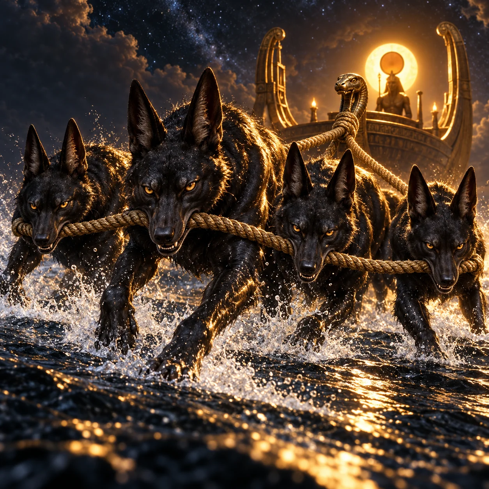
Empat jackal hitam menarik perahu surya dengan tali berujung kepala ular.
Aura: Empat penarik dan pelindung kuat c01/c07/c08 memperlihatkan keagungan.
Audit ciri dan sumber
- [object Object]
- [object Object]
- [object Object]
UjiSangar7/7native+200: empat blackjackalheads distinct menarik rope+solarbarque; splashesnaturalwateryvault c08; packdominates gerakaktif; notordinaryanimals owing sacredtowing context; noextra/text.
Review sumberONE original square premium painterly cinematic Mitoloka illustration of the Western Spirits, FOUR sacred black jackals towing Ra's solar barque through the watery vault of heaven.
ANATOMY: exactly FOUR living BLACK jackals, each one jackal head, two ears, four paws and one tail; all four distinct heads clearly visible. No humanoid bodies, no fifth jackal. A thick towing hawser with a single carved snake-headed terminal joins them to the solar vessel. [esprits-de-l-ouest-c01,c08]
MOMENT: all four jackals strain forward in coordinated powerful movement, heads lowered toward the viewer, taut towing rope between teeth and shoulders, paws driving splashes through dark celestial water. Their pack dominates foreground; vessel behind them, secondary.
POWER: physical towing and protection of the Sun-god on the night journey; no magic beams or invented attack. [esprits-de-l-ouest-c02,c07,c08]
SCALE & CAMERA: low water-level close camera; four jackals arranged in a staggered diagonal so every face is clear and large, foreground pack fills 80 percent of square.
LIGHT & WEATHER: a warm low solar lamp or sun disk mounted in the distant barque gives a single backlight, gold rims on black fur, dark watery heaven, physical spray.
SURFACE: wet black fur, sinewy shoulders, coarse thick rope, antique wood solar vessel, deep dark water.
SETTING: watery vault of heaven during the final phases of the nocturnal solar journey. [esprits-de-l-ouest-c07,c08]
MOOD: awe-inspiring sacred protectors, mighty and disciplined, never evil, cute or calm.
HARD CONSTRAINTS: no text, lettering, hieroglyphs, logo, border, frame or watermark; exactly four black jackal animals, no bird variant mixed in; no extra heads/limbs; no film/game/anime/comic design; no gore; no generic aura, neon outlines or energy ribbons.
Feilian
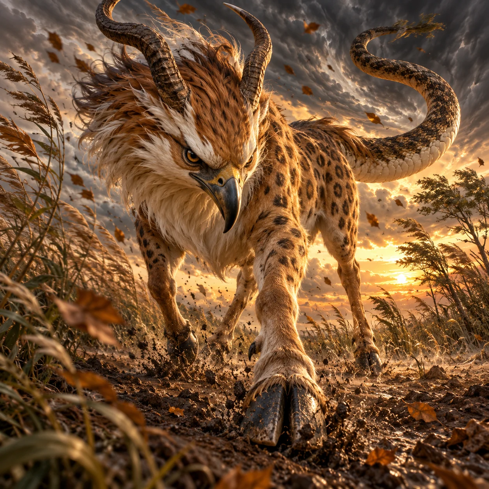
Varian historis Jin Zhuo: kepala burung, tubuh rusa bercak, tanduk, ekor ular.
Aura: Anatomi gabungan c10 dan kuasa angin fisik c10 memberi keagungan.
Audit ciri dan sumber
- [object Object]
- [object Object]
UjiSangar7/7native+200: birdhead2horns, deerbody4hooves spotted,1snaketail; no wings; chargemoment dan windc10 bendingreeds/trees+leaves; noextra/text, mighty hybrid bukanhewanbiasa.
Review sumberONE original square premium painterly cinematic Mitoloka illustration of Feilian, the Chinese sacred beast controlling winds in the historically documented Jin Zhuo form.
ANATOMY: exactly ONE bird head with a strong avian beak, a pair of horns growing from that head; a deer's body with exactly four deer legs and hooves, markings like leopard spots, exactly ONE long SNAKE tail clearly curving beside the body. NO WINGS and no deer head, no dragon body: this is the Jin Zhuo variant. [feilian-c10]
MOMENT: charge toward the viewer from a swirling gale, forehooves digging into earth, bird head lowered in sovereign determination, snake tail whipping in a clear S curve along one side.
POWER: its documented control of winds physically bends tall reeds and low trees away from its path and drives a stream of fallen leaves and grit around the body; no colored energy. [feilian-c10]
SCALE & CAMERA: ground-level low close camera; beast fills the square, front hoof and bird head clearly readable at thumbnail; no invented giant size.
LIGHT & WEATHER: one low warm sunset break through dark gale clouds, rim light, wind-tossed grit and leaves, deep walnut shadows.
SURFACE: short spotted deer fur, textured horns, avian beak, dry snake scales on the tail, wet dark earth.
SETTING: open earth-and-reed ground as neutral editorial stage for wind, no invented sacred landmark.
MOOD: awe-inspiring sacred wind beast, imposing and active, never evil, cute or calm.
HARD CONSTRAINTS: no text, lettering, logo, border, frame or watermark; one bird head, four deer legs, one snake tail, no wings; no film/game/anime/comic design; no nudity/gore; no aura/neon/energy ribbons.
Feng (mythology)
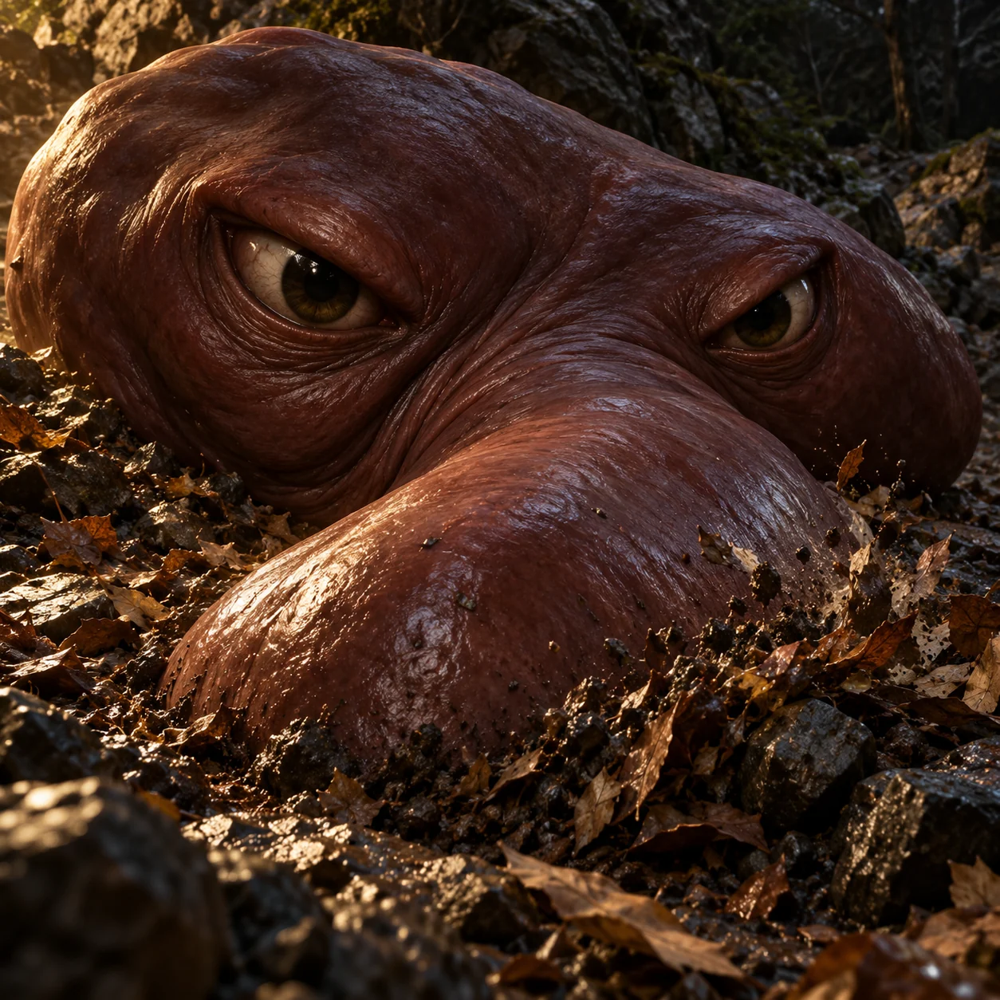
Shirou dua mata dengan bentuk massa menyerupai hati sapi, permukaan utuh non-gore.
Aura: Dua mata pada massa tanpa anggota c05 dan pembentukan ulang c02 memberi keganjilan.
Audit ciri dan sumber
- [object Object]
- [object Object]
- [object Object]
Uji Sangar 7/7 native+200: tepat dua mata tajam pada massa hati-sapi utuh; lobus depan tersambung membengkak maju mendorong tanah/daun dengan debris airborne, aksi regenerasi non-gore c02/c05. Dominasi macro dan tatapan menekan; tanpa mouth/limb/text/aura/IP. Tidak staticstillobject seperti01.
Review sumberONE original square premium painterly cinematic Mitoloka illustration of Feng, the Chinese look-flesh creature, a two-eyed living mass shaped like an ox liver.
ANATOMY: one smooth lobed asymmetrical fleshy mass with the broad curved outer silhouette of an ox liver, exactly TWO large watchful eyes embedded directly in the mass; no head, no mouth, no nose, no limbs, no teeth, no blood or exposed organ detail. Matte dark walnut-maroon exterior, fully intact skinlike surface, not a butcher's organ. [feng-mythology-c01,c05,c06]
MOMENT: actively thrust a large newly re-forming smooth lobe down and forward toward the camera; the lobe physically pushes a ridge of dirt and wet leaves sideways, frozen at the moment of visible displacement. The two huge unblinking eyes stare down sharply from the upper mass with narrow heavy lids, no soft friendly face. New smooth lobe stretched outward with compressed folds behind it; show the real mechanical expansion visibly.
POWER: regeneration shown as one peripheral lobe expanding outward forcefully into earth, pushing leaf litter and pebbles physically aside as the creature returns to its former shape; no cut surface, wounds or gore. [feng-mythology-c02,c05]
SCALE & CAMERA: extreme macro ground-level close view, the broad flesh-mass and its two unblinking eyes occupy 85 percent of the square; do not imply giant dimensions.
LIGHT & WEATHER: one harsh low amber side light rakes wrinkles and eyes, very deep nearly black forest shadows, leaf litter flying from physical lobe displacement.
SURFACE: soft rubbery matte skinlike texture with shallow wrinkles, intact smooth surface; wet leaf litter and dark stone.
SETTING: dark rocky mountain slope with woodland litter, Mount Di from the classical account. [feng-mythology-c13]
MOOD: deeply uncanny and imposing through impossible living anatomy, never cute, food photograph or decorative.
HARD CONSTRAINTS: no text/logo/border/frame/watermark; exactly two eyes and zero limbs; no human miniature variant, no Jupiter orb; no blood, wounds, dissection, exposed viscera, gore or eating scene; no film/game/anime/comic design; no aura, glow, neon or energy ribbons.
Four Holy Beasts
Menunggu gambar yang lolos audit
Four Symbols
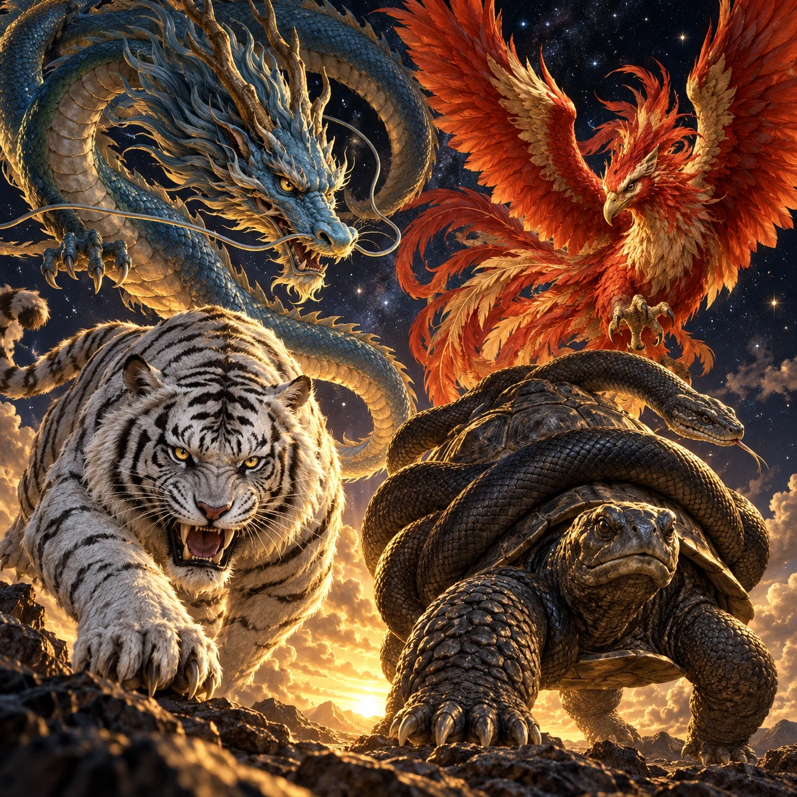
Empat penjaga konstelasi maju dalam satu komposisi, Xuanwu tetap satu kesatuan kura-kura-ular.
Aura: Keagungan empat penjaga c01/c02 lewat konvergensi aktif tanpa efek kuasa rekaan.
Audit ciri dan sumber
- [object Object]
- [object Object]
Uji Sangar7/7 native+200: empat guardian komposisi maju dominan, blue dragon/red bird/white tiger/black turtle-snake jelas. Satu ular kontinu melilit shell bukan guardian kelima. Tiger step/dragon curve/bird wing sweep/turtle advancing memberi moment. Tanpa elementalattack atau generic aura; horizonlight alami, stars c01. Anatomi tiap entity plausible/tidak extra; no text/IP.
Review sumberONE original square premium painterly cinematic Mitoloka illustration of Four Symbols, exactly FOUR sacred directional constellation guardians.
ANATOMY: four guardian compositions: one Azure Dragon with one head, one Vermilion Bird with one head and two wings, one White Tiger with one head and four legs, one Black Turtle-Snake composite with a turtle head and ONE snake wound continuously around its shell. The snake belongs to the turtle-snake entity and is never a separate fifth guardian. Distinct dragon/bird/tiger/turtle faces, all readable. [four-symbols-c02,c05,c06]
MOMENT: converge toward the low camera in coordinated guarding movement: azure dragon curves down across upper left, vermilion bird sweeps its red wings across upper right, white tiger leaps forward at lower left, black turtle pushes forward at lower right while its attached serpent tightens around its shell. Four interlocking silhouettes, no independent snake floating elsewhere.
POWER: no documented attack; do not depict fire, lightning, magical water or energy. Majesty through physical anatomy, directional convergence and constellation context only. [four-symbols-c01,c03]
SCALE & CAMERA: tight low-angle perspective, four entities together fill 90 percent square; no human or giant-size comparison.
LIGHT & WEATHER: single warm horizon light, deep night shadows, antique gold rim light, natural star points only.
SURFACE: azure dragon scales, layered vermilion feathers, coarse white tiger fur with dark stripes, black weathered turtle shell and natural dark serpent scales.
SETTING: dark celestial sky of their constellations, subtle natural stars; no diagram, symbols, constellations joined by lines or invented palace. [four-symbols-c01]
MOOD: awe-inspiring sacred protectors, energetic and imposing, never evil, cute or decorative.
HARD CONSTRAINTS: no text, lettering, logo, border, frame or watermark; no extra heads, limbs or fingers; no film, game, anime or comic design; no nudity or explicit gore; no generic glow aura, neon outline or energy ribbons.
Fuzanglong
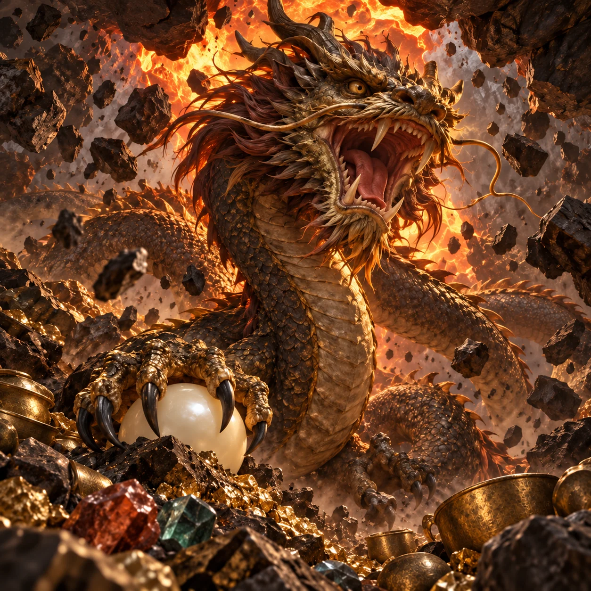
Naga penjaga harta menerobos tanah gunung api sambil melindungi mutiara.
Aura: Terobosan vulkanik c03 dan tatapan penjaga harta c01 mendominasi.
Audit ciri dan sumber
- [object Object]
- [object Object]
- [object Object]
UjiSangar7/7native+200: edited bowls now plain hammeredmetal patina, no boxedmarks/inscription bands anywhere. Dragon/onepearl/continuousbody/volcanicbreach+rockdebris c03/treasurec01/c02 preserved, active and dominant. No pearlbeam/firebreath/generic aura; no text/IP/gore.
Review sumberEdit the supplied Fuzanglong illustration. Preserve the existing dragon head, anatomy, pose, scale, pearl, golden treasures, erupting volcano, rock fragments, lighting, square composition and painterly medium exactly. Remove ALL carved ornaments, relief markings, inscription bands, boxed glyphs, patterns and pseudo-lettering from EVERY bronze/gold vessel and metal object throughout the image, especially the large bowl at bottom right and vessels at bottom left. Replace these surfaces with completely PLAIN HAMMERED BRONZE, smooth irregular metal patina with no symbols or bands whatsoever. No text, lettering, characters, numbers, runes, logos, borders or watermark anywhere. No other changes. Keep one dragon, one pearl, no generic aura, no invented powers, no gore. The inherited dragon/treasure/pearl/volcanic emergence is supported by fuzanglong-c01,c02,c03,c04,c07.
Gajasimha
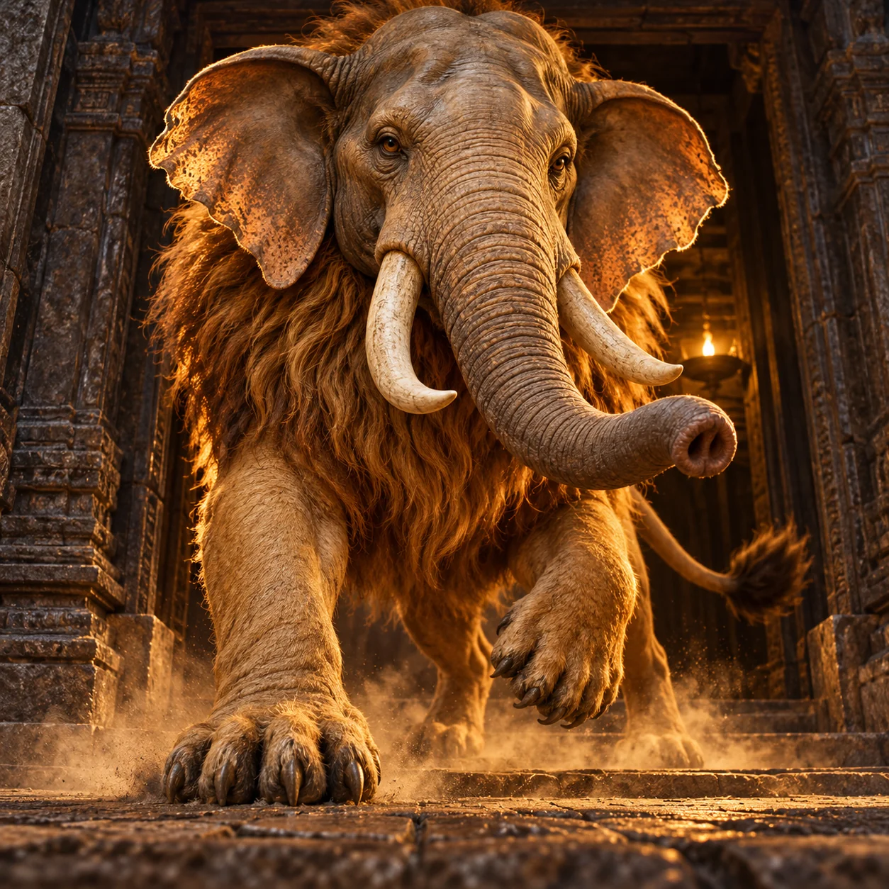
Gajah berkepala satu pada tubuh singa hidup melangkah aktif dari pintu kuil.
Aura: Anatomi hybrid c01/c10 dan tugas penjaga pintu c08 memberi keagungan aktif.
Audit ciri dan sumber
- [object Object]
- [object Object]
UjiSangar7/7native+200: satu kepala elephant/trunk/dua tusks/twoeyes menyatu tubuh lion mane+fourpaws+tail; forepaw forward/raised dan dust kontak memberi gerak maju. Hybrid c01/c10 dominan bukan elephantordinary; templeguardian contextc08 sacred notevil. Tidak powersinvented/text/IP/gore.
Review sumberONE original square premium painterly cinematic Mitoloka illustration of Gajasimha, the sacred living elephant-headed lion guardian.
ANATOMY: exactly one elephant head with two eyes, two elephant ears, one trunk and two natural tusks attached to one powerful lion body with four lion legs, lion mane around the neck and one lion tail. No second animal or second lion face. [gajasimha-c01,c07,c10]
MOMENT: bound down from the dark temple threshold toward the low viewer, one forepaw planted and one raised, trunk sweeping forward and mane blowing; all four leg attachments plausible.
POWER: no documented magical attack; guarding action and hybrid anatomy only. Ordinary dust stirred by paws, no shockwaves or supernatural ground cracks.
SCALE & CAMERA: very low close camera, elephant head and lion torso fill 85 percent square; no humans or invented giant-size comparison.
LIGHT & WEATHER: one warm oil lamp within the doorway, gold rim light on elephant ears and mane, deep shadows, physical disturbed dust.
SURFACE: thick creased elephant skin, coarse lion mane and ochre fur, weathered stone threshold.
SETTING: main doorway of temple natamandapa as a living dvarapala guardian rather than sculpture; restrained dark stone doorway without specific invented iconography. [gajasimha-c08]
MOOD: sacred and awe-inspiring guardian, solemn powerful protection, never evil or cute.
HARD CONSTRAINTS: no text, lettering, logo, border, frame or watermark; no extra heads, limbs or fingers; no film, game, anime or comic design; no nudity or explicit gore; no generic glow aura, neon outline or energy ribbons.
Gaoh
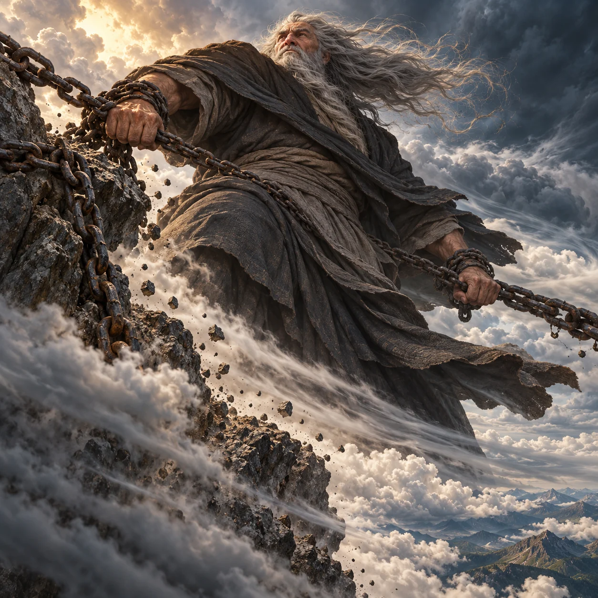
Pria tua raksasa terikat batu berjuang dan menghasilkan angin badai.
Aura: Proporsi raksasa c01/c08 dan angin fisik saat berjuang c07 memberi keagungan, bukan evil.
Audit ciri dan sumber
- [object Object]
- [object Object]
- [object Object]
UjiSangar7/7native+200: one elderlygiant, twoarms/twohands plausible, opaquerobes coverbody. Chainedrockc07, straining taut chains and hair/cloth/clouds blowing physically c04/c07, mountains below establish giantc01/c08. Resolute benevolent notevil c10, subjek dominates; no extra/anatomy/text/IP/gore/aura.
Review sumberONE original square premium painterly cinematic Mitoloka illustration of Gaoh, the mostly benevolent giant wind spirit in the form of a solitary old man.
ANATOMY: one giant elderly man with one head, two eyes, two arms and two legs, weathered face and long grey hair. Fully opaque plain dark mantle and layered cloth cover the whole torso, hips and legs; no invented tribal headdress or sacred motifs. Massive iron chains bind him to a natural rock. [gaoh-c01,c02,c07]
MOMENT: strain against the taut chains with both hands and planted feet, torso twisting toward the low viewer, eyes resolute rather than evil; hair and cloth swept strongly in one direction.
POWER: his attempt to break free drives actual gale wind, visible as flying cloud banks and dust ripped from the rock, a storm physically churns around the rock without magical ribbons or lightning beams. [gaoh-c04,c07]
SCALE & CAMERA: extreme low angle; his colossal body fills the frame against huge cloud banks, distant small mountain ridges far below establish documented giant proportions. [gaoh-c01,c08]
LIGHT & WEATHER: one warm break in storm clouds lights face and hands, deep storm shadows, powerful wind, natural dust.
SURFACE: old creased skin, grey wind-tangled hair, rough opaque fabric, tarnished iron chain and jagged rock.
SETTING: broad northern sky where the giant is confined, rock suspended amid ordinary cloud banks as editorial spatial staging. [gaoh-c07,c08]
MOOD: awe-inspiring sacred wind authority, mostly benevolent and obedient to Creator, no malicious cannibal scene, no demon face. [gaoh-c04,c10]
HARD CONSTRAINTS: no text, lettering, logo, border, frame or watermark; no extra heads, limbs or fingers; no film, game, anime or comic design; no nudity or explicit gore; no generic glow aura, neon outline or energy ribbons.
giant anaconda
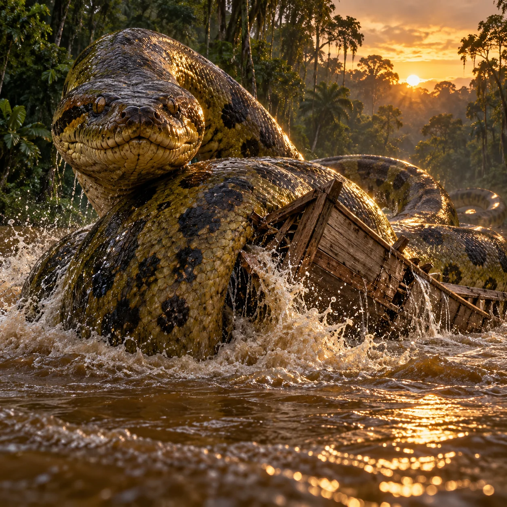
Legenda anaconda besar membalik dan menekan kano kayu, memakai account c07.
Aura: Anaconda berukuran legenda c01/c02 menekan kano c07 memberi ancaman nyata.
Audit ciri dan sumber
- [object Object]
- [object Object]
- [object Object]
UjiSangar7/7native+200: exactly one snakehead/twoeyes, uninterrupted heavy coils/no limbs/horns; head confronts and coils visibly crush/tip emptycanoe with splitplanks+physicalwater c07. Canoe supports legendarygreaterthaneveryday size c01/c02; Amazonforestc01/c07. Dominant menace200 bukan naturalportrait, no text/IP/aura/gore.
Review sumberONE original square premium painterly cinematic Mitoloka illustration of the Giant Anaconda, the legendary immense serpent of Amazon tales, a report rather than verified zoology.
ANATOMY: one enormous anaconda with exactly one head, two eyes, a single unbroken muscular coiling body and one tail, no legs, horns or wings. Natural olive-black blotched scales, closed powerful mouth without exaggerated fangs. [giant-anaconda-c01,c02,c07]
MOMENT: tighten a heavy coil around a wooden canoe, visibly buckling and tipping its hull while lifting its head directly toward the low viewer; continuous thick body loops behind the boat, no gore or people.
POWER: physical boat capsizing and crushing as reported in the modern account of the legend, no spell, electrical effect or invented poison. Water erupts from the rolling hull. [giant-anaconda-c07]
SCALE & CAMERA: waterline close wide view; huge snake fills foreground, a recognisable full-size wooden canoe in its coil supports the reported more-than-nine-meter scale without extrapolating a hundred-meter monster. [giant-anaconda-c02,c07]
LIGHT & WEATHER: single dusk break through rainforest canopy, warm gold rims, very dark green shadows, natural muddy splashes.
SURFACE: wet textured blotched scales, soaked scratched canoe planks, muddy river water, dense humid foliage.
SETTING: flooded Amazon rainforest river margin. [giant-anaconda-c01,c07]
MOOD: dangerous crushing confrontation, powerful documented legendary scale, never ordinary zoological portrait.
HARD CONSTRAINTS: no text, lettering, logo, border, frame or watermark; no extra heads, limbs or fingers; no film, game, anime or comic design; no nudity or explicit gore; no generic glow aura, neon outline or energy ribbons.
Glær
Menunggu gambar yang lolos audit
Göl Boğaları
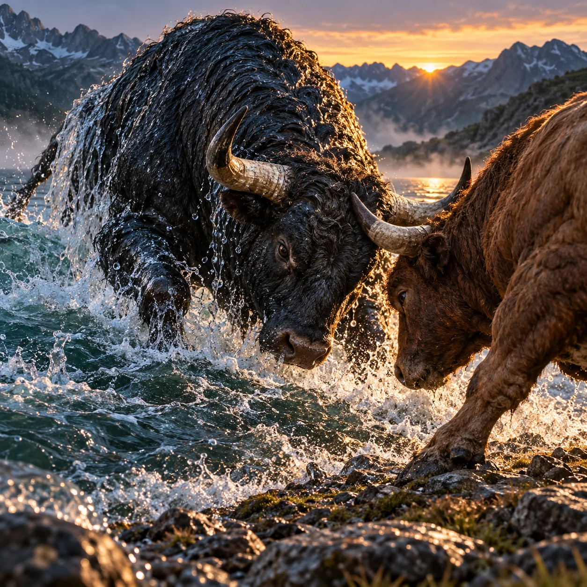
Bull danau Karçal muncul dan bergulat bull peternak pada fajar.
Aura: Muncul dari danau dan bergulat c02/c04/c10 memberi ancaman naratif tanpa anatomi rekaan.
Audit ciri dan sumber
- [object Object]
- [object Object]
- [object Object]
UjiSangar7/7native+200: dua bulls kepala masing-masing jelas, naturalhorns dan plausible4legs tidak fins/extra. Lakebullhitam emerges with sheetwater while hornlocking brownbull di shoreline c02/c04/c10; violent active confrontation dominan bukan grazingordinary. Dawnmountainlakec01/c02/c10, effects physicalsplashes only, no curse/blood/aura/text/IP.
Review sumberONE original square premium painterly cinematic Mitoloka illustration of Göl Boğaları, a lake bull emerging from a mountain lake to wrestle a shepherd's bull.
ANATOMY: exactly TWO bulls, one central dark lake bull and one secondary brown terrestrial bull, each with one head, two eyes, two natural horns, four hooved legs and one tail. No steel horns, aquatic fins, extra heads, fantasy eyes or invented monster anatomy. [gol-bogalar-c04,c10]
MOMENT: the massive-framed lake bull surges half out of the water and locks its horns with the shore bull, both necks straining and heads lowered near the viewer; the lake bull dominates, legs physically driving the surge.
POWER: physical emergence and wrestling at the shore, a dense sheet of water drains from the lake bull and waves crash from its movement; no magical water manipulation or curse effects. [gol-bogalar-c02,c04,c10]
SCALE & CAMERA: extreme low waterline camera, lake bull head and shoulders fill 65 percent square, its rival side-on at right secondary but clearly identifiable, natural bull scale, no giant comparison.
LIGHT & WEATHER: first dawn light from one narrow warm horizon strip, wet gold rimlight, deep mountain shadow, natural spray and cold mist. [gol-bogalar-c02]
SURFACE: soaked dark coarse fur, heavy wet natural horns, brown rival fur, rocky shore and dark lake water.
SETTING: mountain lake in Karçal mountains of Ardanuç, rocky shore at dawn. [gol-bogalar-c01,c02,c10]
MOOD: mythic aquatic confrontation, dangerous wrestling action, never passive ordinary grazing livestock.
HARD CONSTRAINTS: no text, lettering, logo, border, frame or watermark; no extra heads, limbs or fingers; no film, game, anime or comic design; no nudity or explicit gore; no generic glow aura, neon outline or energy ribbons.
Golden Kite
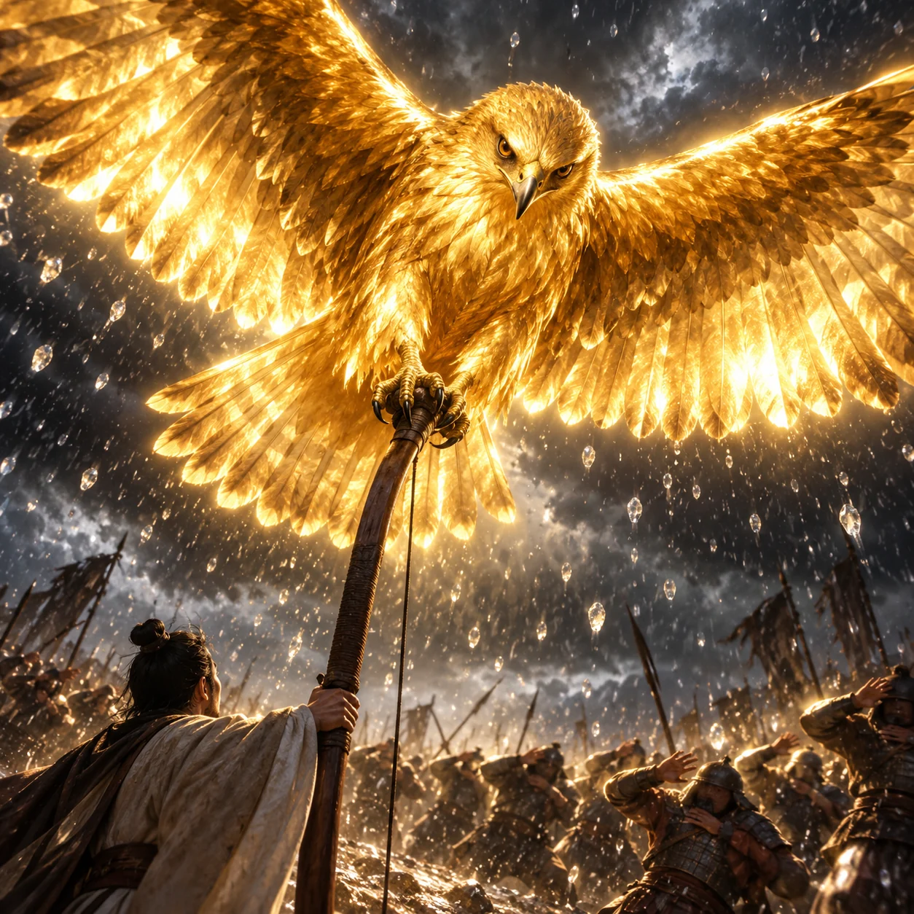
Kite emas dua kaki pada ujung busur menyilaukan pasukan dalam hujan es.
Aura: Cahaya penyilau documented c02/c05 dan wingbrace pada bowtip membuat keagungan sakral.
Audit ciri dan sumber
- [object Object]
- [object Object]
- [object Object]
UjiSangar7/7native+200: one goldenraptor/onehead/twoeyes/twowings/twofeet talons grip bowedwoodTIP with bowstringvisible. Wingbrace active; birdgoldenlight illuminates hail/dazzledopponentsc02/c05, not generic invented aura/bolts. Darkbattlefieldc05/c06, Jinmu opaqueplainrobe secondary, sacredmajesticnot evil. No thirdleg/crow/text/IP/gore.
Review sumberONE original square premium painterly cinematic Mitoloka illustration of the Golden Kite, sacred golden spirit bird perched on Jinmu's bow and dazzling the opposing army.
ANATOMY: exactly ONE golden kite raptor with one beaked head, two piercing eyes, two broad wings and exactly TWO taloned feet visibly gripping the TIP of a tall curved bow. No crow anatomy, no third leg. Jinmu is secondary, one fully clothed distant figure holding the bow, with opaque plain historical robes and no invented ornate imperial crown. [golden-kite-c01,c02,c05]
MOMENT: brace on the bowtip with talons visibly planted and sweep both wings outward toward the low viewer, golden head turned down in commanding direct gaze; opposing warriors behind recoil and shield their eyes.
POWER: documented bright golden lightning-like LIGHT radiates physically from golden feathers and illuminates the hail and enemy faces, dazzling the army; depict no electrical attack bolts, no floating rune or circular aura. Sudden dark sky and falling hail. [golden-kite-c02,c05]
SCALE & CAMERA: extreme low close viewpoint to bowtip, kite fills 80 percent square through perspective, Jinmu hand and opaque sleeve near base of bow, small warriors blurred behind; no unsupported giant bird size.
LIGHT & WEATHER: bird's documented golden light is the single dominant source, deep storm-dark background, illuminated falling hail, antique gold/umber palette. [golden-kite-c05]
SURFACE: highly tactile metallic-golden feather barbs, dark gold beak, rough wooden bow and translucent hailstones.
SETTING: dark battlefield from Jinmu narrative, opposing army reacting, no flag lettering or historical emblems. [golden-kite-c05,c06]
MOOD: awe-inspiring sacred beneficent omen, commanding and luminous, never evil, demonic or cute.
HARD CONSTRAINTS: no text, lettering, logo, border, frame or watermark; no extra heads, limbs or fingers; no film, game, anime or comic design; no nudity or explicit gore; no generic glow aura, neon outline or energy ribbons.
Gougou
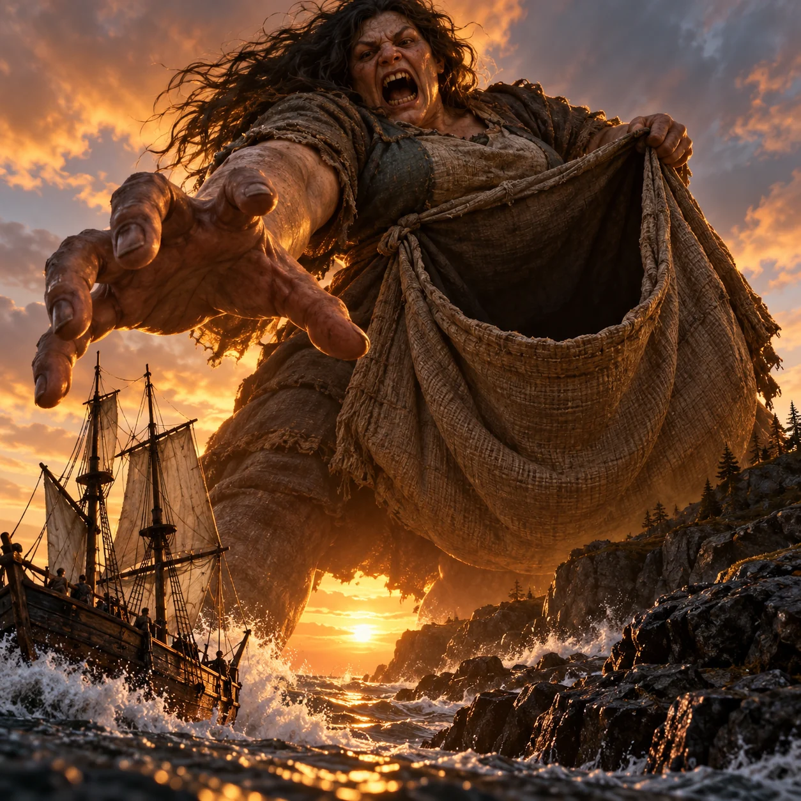
Raksasa perempuan berkantong menangkap dari tepian Miscou.
Aura: Ukuran raksasa dan kantong penangkap c05–c07 memberi ancaman.
Audit ciri dan sumber
- [object Object]
- [object Object]
Native dan thumbnail 200px diperiksa: tujuh Uji Sangar ya; ogress mendominasi, kantong dan kapal pembanding terbaca, tangan menangkap aktif, anatomi tunggal benar, tanpa efek sihir/teks/gore.
Review sumberONE original square premium painterly cinematic Mitoloka illustration of Gougou, the immense woman-shaped man-eating ogress of Miscou Island.
ANATOMY: one frightful woman's head, two eyes, two arms and two legs; fully opaque coarse ancient cloth clothing with one enormous deep cloth pocket on her front, its opening as large as a sailing ship [gougou-c04,gougou-c06,gougou-c07]. No horns or invented animal anatomy.
MOMENT: loom over the viewer and thrust one grasping hand downward towards a tiny wooden sailing vessel at the shore, the other hand gripping open her vast pocket; ferocious open mouth, no blood or injury.
POWER: no documented magical power; menace through immense size and the documented capturing pocket [gougou-c05,gougou-c06,gougou-c07].
SCALE & CAMERA: extreme low angle from the water beside the tiny ship; its tallest masts only reach below the ogress's waist; her face, hand and vast pocket dominate the square.
LIGHT & WEATHER: one low amber setting sun rims her face and cloth, deep walnut shadows, sea spray.
SURFACE: rough weathered skin, coarse woven cloth, wet rock and battered wooden ship.
SETTING: rocky Miscou Island shore at Bay of Chaleurs [gougou-c02,gougou-c04,gougou-c10].
MOOD: terrifying and imposing, never cute, calm or decorative.
HARD CONSTRAINTS: no text, lettering, logo, border, frame or watermark; no extra heads, limbs or fingers; no borrowed film/game/anime/comic design; no nudity or explicit gore; no generic glow aura, neon outline or energy ribbons.
Guayota
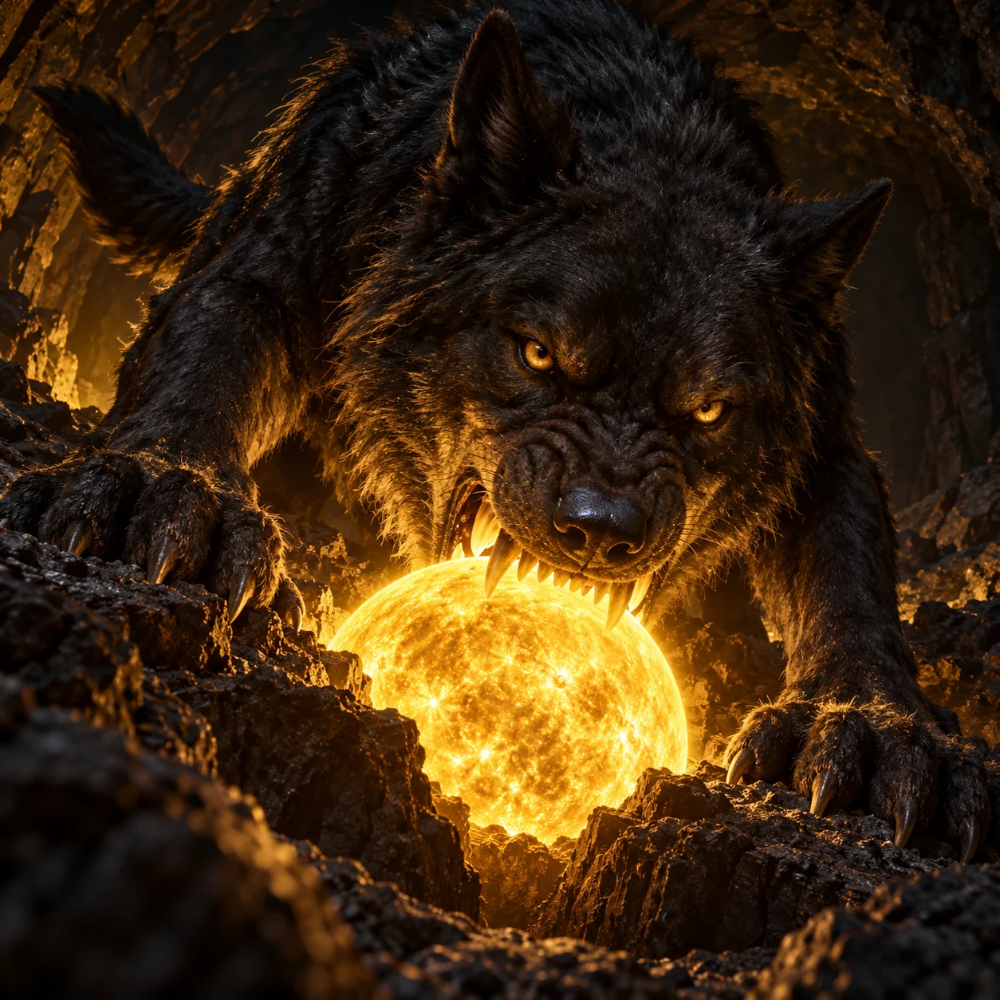
Anjing hitam Guayota menarik matahari ke dalam Teide.
Aura: Sun imprisonment c03/c14 terlihat fisik pada mulut, membedakannya dari anjing biasa.
Audit ciri dan sumber
- [object Object]
- [object Object]
- [object Object]
Native dan 200px dilihat; tujuh Uji Sangar ya. Anjing hitam menggigit tepi matahari yang dikurung dalam gua, anatomi canine tunggal, sun menjadi satu-satunya sumber cahaya, bukan aura; tidak ordinary animal, teks, gore atau atribut rekaan.
Review sumberONE original square premium painterly cinematic Mitoloka illustration of Guayota, the Guanche malignant deity in the documented form of a black dog imprisoning the sun inside Teide.
ANATOMY: one black canine head, two natural eyes, four canine legs, one tail; thick black fur, a powerful canine jaw and no horns [guayota-c13].
MOMENT: brace the forepaws on volcanic rock and drag the luminous sun down into a black cavern with the open jaws closing around its rim, snarling towards the viewer.
POWER: the kidnapped sun is being shut inside Teide, darkness swallowing the landscape beyond; the sun is a physical spherical golden disk at the dog's mouth, not a magical aura [guayota-c03,guayota-c14].
SCALE & CAMERA: extreme low angle, tightly framed head and forequarters occupy nearly the entire square, no invented numerical giant size.
LIGHT & WEATHER: one source only, the captive sun lights the dog's teeth and black fur with antique gold rim light while cavern shadows dominate.
SURFACE: coarse soot-dusted fur, sharp natural teeth, rough volcanic basalt.
SETTING: inside the Mount Teide volcanic cavern [guayota-c02,guayota-c12,guayota-c18].
MOOD: dangerous supernatural presence, menacing, never ordinary pet or calm decorative dog.
HARD CONSTRAINTS: no fire breath, lava magic or floating runes; no text, lettering, logo, border, frame or watermark; no extra heads or limbs; no borrowed film/game/anime/comic design; no nudity or gore; no generic glow aura, neon outline or energy ribbons.
Hıbılık
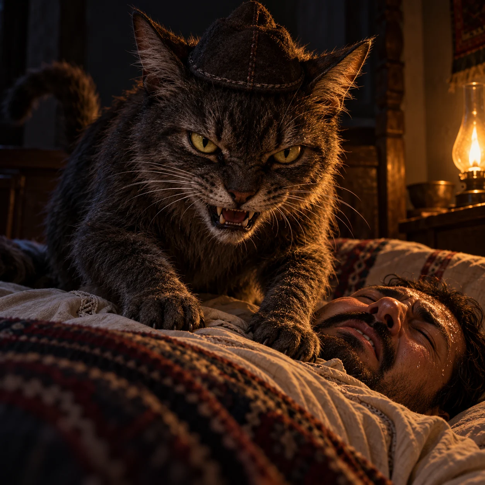
Hıbılık varian kucing berbörk menindih dada korban tidur.
Aura: Tekanan nyata pada dada c03/c05/c12 dan börk c07 memberi ancaman spirit.
Audit ciri dan sumber
- [object Object]
- [object Object]
- [object Object]
Native+200px dilihat, tujuh Uji Sangar ya: capped cat menekan dada korban yang berkeringat, bukan kucing tenang; dua forepaws menekan selimut, empat kaki feline implied dengan belakang sebagian tersembunyi; no magic light/no text, gore atau extra limbs.
Review sumberONE original square premium painterly cinematic Mitoloka illustration of Hıbılık, the chest-pressing nocturnal spirit of Turkish folk belief in its documented cat form wearing a magic börk cap.
ANATOMY: one feline head, two feline eyes, four cat legs and one tail; wears a small dark felt börk cap on the crown, clearly visible between the ears [h-b-l-k-c07,h-b-l-k-c08].
MOMENT: crouch aggressively on a fully clothed sleeping adult's upper chest, both forepaws pressing the collarbone near the throat, leaning its face directly towards the viewer with tense exposed teeth; sleeper sweating with closed eyes, no wound.
POWER: physical chest pressure immobilizes the sleeper; show compression of the blanket and a strained sweating face, no magical beams or levitation [h-b-l-k-c03,h-b-l-k-c05,h-b-l-k-c12].
SCALE & CAMERA: mattress-level extreme low close angle; the capped cat's face and forepaws dominate, natural cat scale, sleeper foreshortened beneath.
LIGHT & WEATHER: one warm oil lamp from the side; deep dark room and crisp amber rim light, no glowing eyes.
SURFACE: coarse dark fur, worn felt cap, opaque woven bedding and clothing.
SETTING: bedside of a sleeping person in a dark room [h-b-l-k-c05,h-b-l-k-c12].
MOOD: sinister supernatural night visitation, confrontational and threatening, never a cute house cat.
HARD CONSTRAINTS: no extra heads, legs or fingers; no wings or horns; no text, lettering, logo, border, frame or watermark; no design borrowed from film/game/anime/comic; no nudity or explicit gore; no generic glow aura, neon outline or energy ribbons.
Halmasti
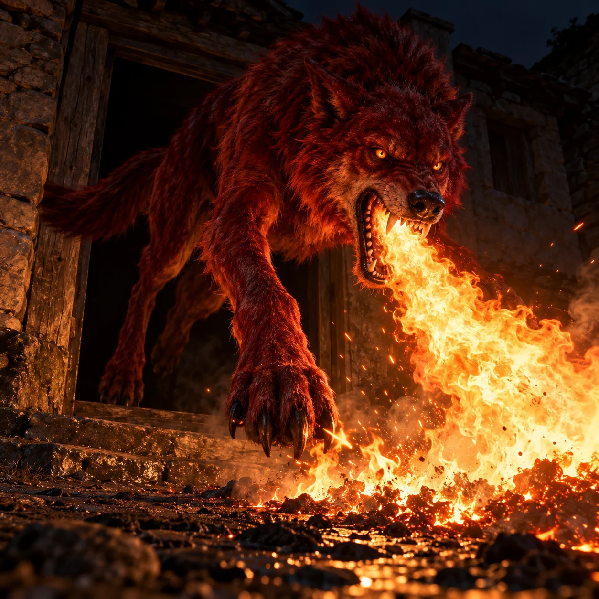
Halmasti wolf-like horse-sized menerjang dengan napas api.
Aura: Napas api c05 dan ukuran kuda c01 memberi ancaman fisik.
Audit ciri dan sumber
- [object Object]
- [object Object]
- [object Object]
Native dan 200px dilihat, tujuh Uji Sangar ya: horse-sized doorway hound melompat dengan napas api kontak tanah c05, red fur dan muzzle panjang terbaca, jumlah anggota canine normal dengan foreleg jauh sebagian tertutup perspektif; no text/gore/extra magic.
Review sumberONE original square premium painterly cinematic Mitoloka illustration of Halmasti, the horse-sized malevolent sky hound of Chitrali mythology.
ANATOMY: a large wolf-like hound with dark red fur, elongated legs and a broad long muzzle; exactly one head, two eyes, four long legs and one tail [halmasti-c01,halmasti-c04]. No horns, no wings.
MOMENT: leap through a dark courtyard doorway toward the viewer, forelegs thrust forward and jaws exhaling a vigorous jet of real orange fire into the foreground.
POWER: documented fire breath physically illuminates and scorches a patch of ground [halmasti-c05]. Do not add thunder powers.
SCALE & CAMERA: extreme low angle; horse-sized hound fills the square; ordinary doorway behind measures its shoulder height [halmasti-c01].
LIGHT & WEATHER: the breath flame is the single light source, deep walnut shadows, smoke and sparks from contact on the ground.
SURFACE: dark red matted fur, leathery nose, damp stone and blackened earth.
SETTING: exterior of a dwelling where a newborn is being protected, dark doorway behind, no baby visible [halmasti-c06,halmasti-c08].
MOOD: terrifying nocturnal menace, dangerous and imposing, never pet-like.
HARD CONSTRAINTS: no text, logo, border or watermark; no extra heads/limbs; no borrowed film/game/anime/comic design; no nudity or explicit gore; no neon outline, generic aura or energy ribbons.
Hira (mythical monster)
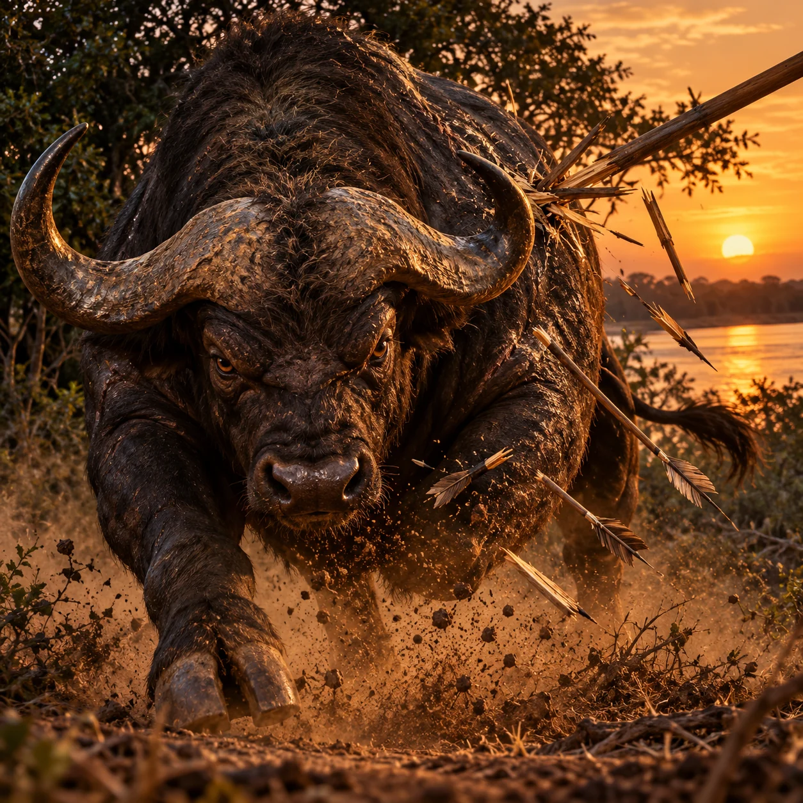
Buffalo Hira menghancurkan tombak dan panah saat menerjang.
Aura: Senjata pecah nyata c10 membedakan dari buffalo biasa.
Audit ciri dan sumber
- [object Object]
- [object Object]
- [object Object]
Native+200px diperiksa, tujuh Uji Sangar ya. Buffalo menerjang dengan tombak pecah saat kontak bahu dan broken arrows c10, bukan grazing animal; dua horns, one head, cloven hooves benar; tidak morph/sihr/gore/teks.
Review sumberONE original square premium painterly cinematic Mitoloka illustration of Hira, the supernatural buffalo monster of Songhai tales with unbreakable hide.
ANATOMY: one powerful buffalo head, two eyes, two natural buffalo horns, four cloven-hoofed legs, one tail, heavy coarse dark hide [hira-mythical-monster-c03,hira-mythical-monster-c07].
MOMENT: lunge directly toward the viewer, violent lowered head and twisted shoulder; a wooden spear shaft snaps visibly against the hide at the near shoulder and broken arrow shafts tumble from contact; no injured people.
POWER: spear and arrows physically break against Hira [hira-mythical-monster-c10]. No elemental effects or magical aura. Remain fully buffalo, do not mix elephant or lion anatomy.
SCALE & CAMERA: extreme low tight angle; head and huge shoulders dominate foreground without inventing numerical giant size.
LIGHT & WEATHER: one low amber late-evening sun, rim light on horns, deep walnut shadows and dust from hooves.
SURFACE: thick scarred hide, coarse hair, splintered wood and gritty soil.
SETTING: threatening scrub bush country beside the Niger River tradition, dense dark bush visible behind [hira-mythical-monster-c01,hira-mythical-monster-c08,hira-mythical-monster-c09].
MOOD: brutal supernatural force, terrifying, never a grazing farm animal.
HARD CONSTRAINTS: no text/logo/frame/watermark; no extra heads/limbs; no borrowed entertainment design; no explicit gore or nudity; no generic glowing aura, energy ribbons or neon.
Hone-onna
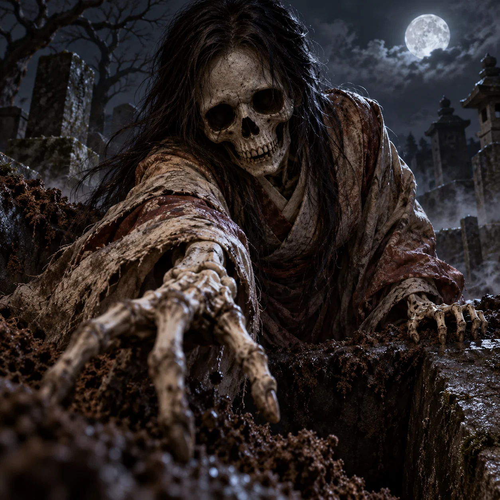
Hone-onna skeletal true form bangkit dari kubur malam.
Aura: True skeletal form c02/c06 dan grave rising c04 membuat sosok jelas supernatural.
Audit ciri dan sumber
- [object Object]
- [object Object]
- [object Object]
Native dan 200px dilihat, tujuh Uji Sangar ya. Skeletal true form menggapai sambil bangkit dari kubur c04, skull/dua hands jelas; natural anatomy, opaque robe, no gore/energy/text; bukan manusia biasa atau pose tenang.
Review sumberONE original square premium painterly cinematic Mitoloka illustration of Hone-onna, the skeletal woman yōkai returning from her grave to seek her lover.
ANATOMY: exactly one bare dry skull head with two empty eye sockets, two skeletal hands, two arms and two legs under a fully opaque weathered Japanese robe; exposed bones only at head and hands, no wet tissue, wounds or gore [hone-onna-c02,hone-onna-c06].
MOMENT: rise from an opened grave and lean forward toward the viewer, one skeletal hand firmly pulling her body above the stone edge, the other reaching toward the viewer; robe and loose earth in motion.
POWER: documented nighttime awakening from the grave is the active physical manifestation [hone-onna-c04]; no life-force beams, no glowing eyes or invented visual energy.
SCALE & CAMERA: extreme low close view; skull, reaching hand and shoulders fill most of the square, natural human proportions.
LIGHT & WEATHER: one low moon lights pale bone and robe edges; deep walnut shadows and ordinary ground mist.
SURFACE: dry weathered bone, frayed opaque cloth, damp rough stone and clinging soil.
SETTING: dark graveyard at night [hone-onna-c04,hone-onna-c05].
MOOD: grief-bound ominous apparition, unsettling and overwhelming, never smiling or decorative.
HARD CONSTRAINTS: no written grave inscriptions, text, logo, border or watermark; no extra heads or limbs; no film/anime/game/comic imitation; no nudity or explicit gore; no generic glow aura, neon lines or energy ribbons.
Hua Po
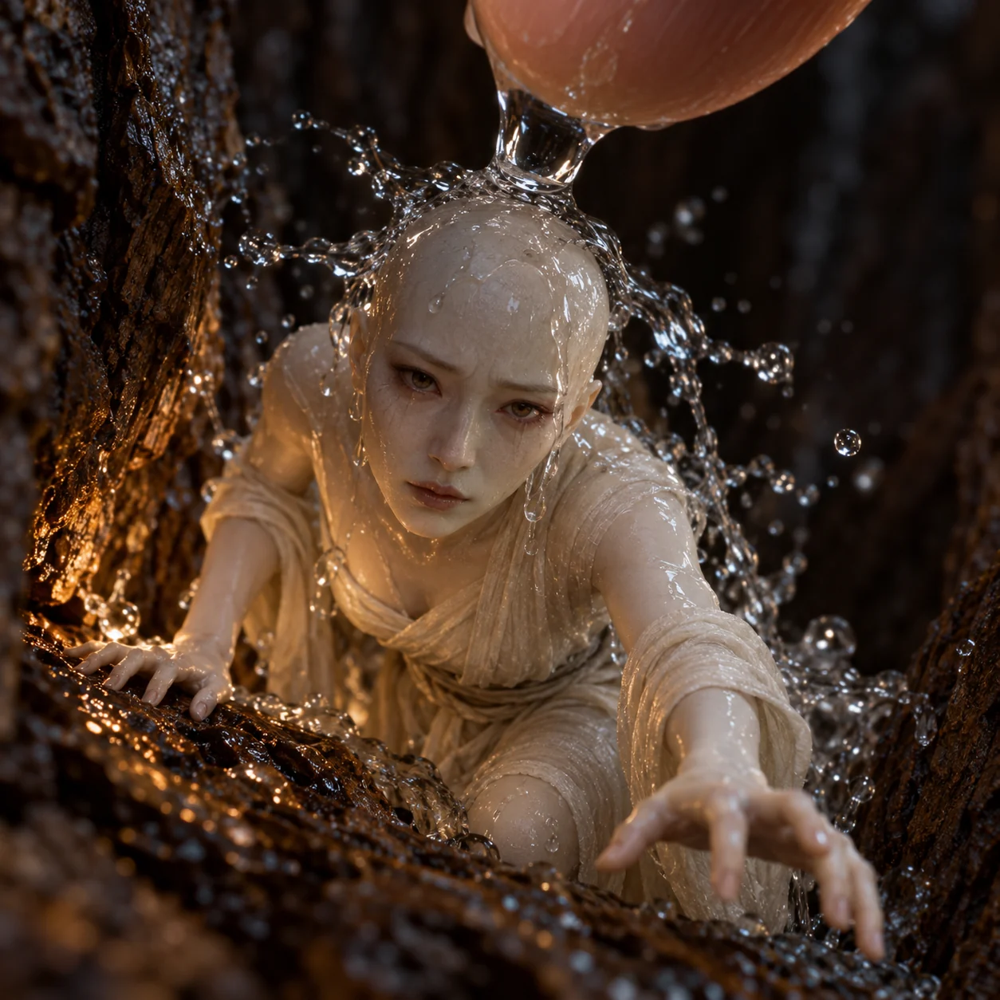
Hua Po palm-sized jade-white hairless spirit pulih ketika disiram air.
Aura: Pemulihan air c05/c08, putih jade hairless dan palm-size c03/c06 memberi uncanny presence.
Audit ciri dan sumber
- [object Object]
- [object Object]
- [object Object]
Native1254 dan thumbnail200 diperiksa. Uji Sangar7 ya: adult hairless jade-white grieving face dominan, palm-scale fingertip, air memulihkan c05/c08, reach aktif, no aura/teks/gore. Percobaan02 lolos,01 wajah anak tetap diarsipkan.
Review sumberONE original square premium painterly cinematic Mitoloka illustration of Hua Po, the palm-sized jade-white hairless woman tree spirit of Chinese lore, reviving under water.
ANATOMY: one unmistakably mature ADULT woman's head, elongated adult facial planes, deep grave eyes, high cheekbones and an intense sorrowful confrontational gaze; no round baby face, no child or teenager; one head, two eyes, two arms and two legs; completely hairless smooth pale white skin like white jade, grief clearly in eyes and brows; palm-sized, wearing a fully opaque simple ivory wrap robe [hua-po-c03,hua-po-c06]. No wings, horns, pointed ears or claws.
MOMENT: rise with one hand braced on rough bark and reach upward as a single enormous droplet of ordinary water breaks across her head and shoulders; chin lowered and grave adult eyes looking directly into the viewer, austere supernatural presence.
POWER: she is revived by water, shown by her now-upright body amid a physical splash; no magical energy or glow [hua-po-c05,hua-po-c08].
SCALE & CAMERA: extreme macro low angle at bark surface, spirit fills most of square; the ordinary adult human fingertip dripping water above is several times her head size, clearly establishes palm-sized body.
LIGHT & WEATHER: one narrow dim amber side light from below, very dark low-key scene, deep walnut tree hollow shadows, physical wet droplets only.
SURFACE: matte white jade-like skin, coarse opaque cloth, ancient textured bark, real clear water.
SETTING: in the tree on Zhanggong Mountain where Xie found and later returned her [hua-po-c06,hua-po-c09].
MOOD: austere uncanny adult spirit, overwhelming solemnity and grief, dark haunted stare, never evil or cute; powerful visual presence through macro framing.
HARD CONSTRAINTS: no hanged people, no hanging ropes; no text, logo, border or watermark; no extra heads/limbs/fingers; no entertainment design imitation; no nudity/gore; no generic glow aura/neon/energy ribbons.
Huān Dōu
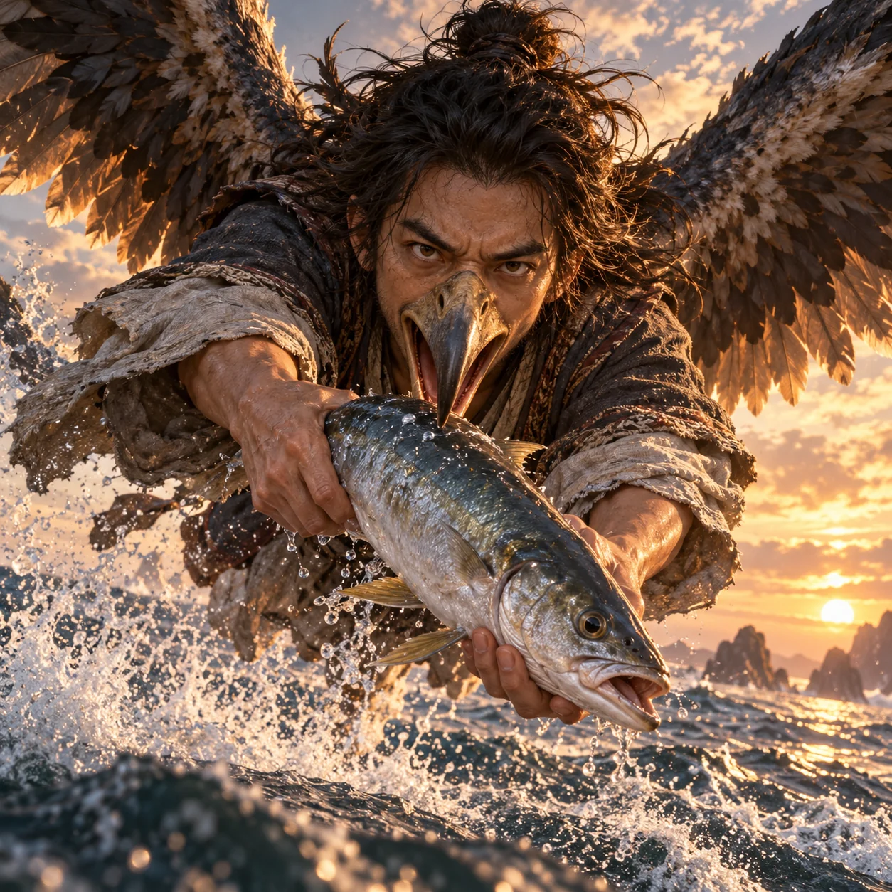
Winged bird-beaked Huan Dou menangkap ikan dari laut.
Aura: Beak/wing anatomy c09/c14 mendominasi framing ketika menangkap ikan.
Audit ciri dan sumber
- [object Object]
- [object Object]
Native1254+200 diperiksa,7Sangar ya. Wajah manusia dengan paruh,2wings dan2arms, opaquecloth; aktif menangkap ikan laut c09/c14. Bukan villain, tanpa magicaleffects atau text.
Review sumberONE original square premium painterly cinematic Mitoloka illustration of Huan Dou, the bird-beaked winged man of the Classic of Mountains and Seas.
ANATOMY: exactly one human head with human facial structure and one unmistakable large bird beak replacing mouth and nose, two human eyes, two human arms, two human legs and two large feathered wings attached to the back; fully opaque rough ancient robe [huan-dou-c09,huan-dou-c14]. No bird legs or extra heads.
MOMENT: swoop toward the viewer over the sea, wings driving air and breaking spray, two hands gripping a freshly caught large fish; sharp solemn gaze directly at viewer, beak open slightly over fish, no blood.
POWER: no documented magical power; the winged fish-catching manifestation itself is active [huan-dou-c09,huan-dou-c14].
SCALE & CAMERA: extreme low close framing, face, beak and wings dominate square, natural human body proportions not invented giant scale.
LIGHT & WEATHER: one warm setting sun, rim light on dark feather edges, deep walnut shadows, ordinary ocean spray.
SURFACE: worn feather vanes, real human skin, coarse opaque cloth, wet fish scales.
SETTING: sea where he eats and catches fish [huan-dou-c09,huan-dou-c14].
MOOD: imposing ancestral mythical being, solemn and awe-inspiring; not a villain, cute mascot or calm portrait.
HARD CONSTRAINTS: no text/logo/border/watermark; no extra heads/limbs; no borrowed film/game/anime/comic design; no nudity or gore; no generic glow aura, neon outline or energy ribbons.
Ibaraki-dōji
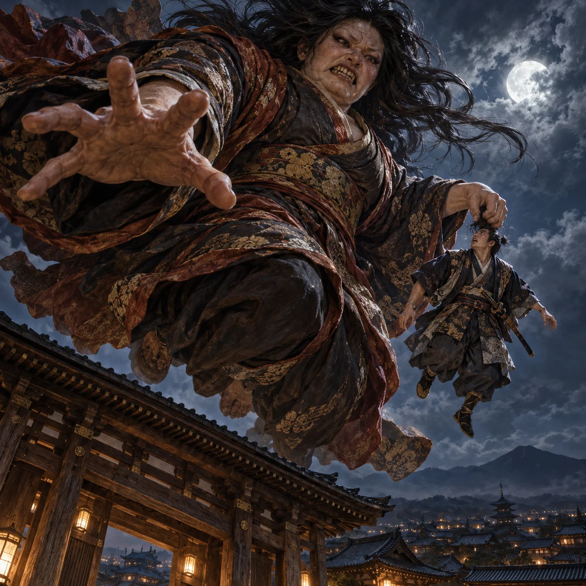
Giant female oni Ibaraki terbang membawa Tsuna sebelum pemotongan lengan.
Aura: Giant c04/c12 dan flight carrying warrior c10 memberi ancaman supernatural.
Audit ciri dan sumber
- [object Object]
- [object Object]
- [object Object]
Native1254+200 diperiksa;7Sangar ya. Female giant teeth c04/c07/c12, hair grip membawa adultTsuna airborne c10,2arms/2legs tanpa horns; no injury/gore/text/aura. Giantdiagonal dominates, aksi terbaca.
Review sumberONE original square premium painterly cinematic Mitoloka illustration of Ibaraki-doji, the enormous fearsome female oni of Heian tales carrying Tsuna through the air.
ANATOMY: one frightening female head, two eyes, a mouth of strong teeth clearly visible, two arms and two legs; giant fully opaque dark ancient robe [ibaraki-doji-c04,ibaraki-doji-c07,ibaraki-doji-c12]. No horns, wings, claws or extra limbs.
MOMENT: surge upward through the night above a Kyoto gate, one hand firmly gripping the hair at the crown of the much smaller fully clothed adult warrior Tsuna below, other hand stretched toward viewer; giant face grimacing and looking down, warrior unharmed and sword sheathed, no severed arm.
POWER: documented unassisted flight while carrying Tsuna by his hair toward Mount Atago; both figures airborne, robe lifted by wind, no beam or aura [ibaraki-doji-c10].
SCALE & CAMERA: extreme low angle from under the huge oni, her face, hands and torso fill square; adult Tsuna dangling small beside her arm gives clearly monstrous giant scale [ibaraki-doji-c04,ibaraki-doji-c12].
LIGHT & WEATHER: one low moon behind clouds, cool rim light and deep warm walnut cloth shadows, wind-tossed fabric.
SURFACE: weathered skin, irregular large teeth, coarse opaque robes, old wooden gate beams.
SETTING: above Kyoto gate in direction of Mount Atago [ibaraki-doji-c02,ibaraki-doji-c10,ibaraki-doji-c12].
MOOD: terrible and havoc-bringing, supernatural airborne ogress, never an ordinary woman or calm portrait.
HARD CONSTRAINTS: no text/logo/border/watermark; no extra heads/limbs/fingers; no borrowed entertainment design; no nudity, blood, injury or explicit gore; no generic glow aura/neon/energy ribbons.
Iemisch
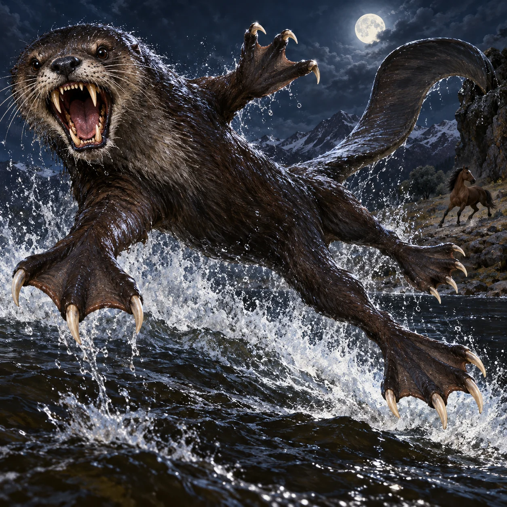
Iemisch menyerbu tepi danau, empat telapak3/4toe terlihat.
Aura: Nocturnal attack c02/c06 dan anomali3/4toe/flatprehensiletail c05.
Audit ciri dan sumber
- [object Object]
- [object Object]
- [object Object]
Native1254+200 diperiksa7Sangar ya. Fourfeet visible, uppermiddle/leftlower fore3each; rightmiddle/rightlower hind4each; smooth head earless; flat wide ribbonprehensiletail hooksrock c05. Openmouth scream/leap c06, splashphysical, no aura/gore/text.03passes after2anatomyrejections.
Review sumberONE original square premium PAINTERLY cinematic Mitoloka illustration of Iemisch, an earless Patagonian nocturnal water monster. A visually counted FOUR-LEGGED creature in a wide diagonal airborne leap toward viewer.
ANATOMY: Short round mammalian head, two fierce eyes, oversized canines, NO external ears whatsoever. Slender long dark wet-furred torso. Exactly FOUR separate short webbed feet, each connected by one visible continuous leg to body: TWO FOREPAWS each have EXACTLY THREE toes and THREE claws; TWO HINDPAWS each have EXACTLY FOUR toes and FOUR claws. Give paws LARGE clean silhouettes, spread like open fans, no folded toes or overlapping claws. Exactly one long broad FLAT paddle ribbon tail with flat top surface visible, hooks around rock [iemisch-c05].
MOMENT: Launch sideways out of water directly at viewer and scream open-mouthed; all four legs spread in DIFFERENT silhouette quadrants, body diagonal, head at upper left, tail at upper right; nearer forepaw at lower left shows3, farther forepaw uppermiddle shows3; nearer hindpaw lower right shows4, farther hindpaw at rightmiddle shows4. Keep paws apart, absolutely no paw hidden by body or another paw [iemisch-c02,c06].
POWER: predator able to drag horses underwater, no magicaleffects [iemisch-c02]; physical ordinary water splash.
SCALE & CAMERA: LOW THREE-QUARTER SIDE VIEW of the complete creature, LONGER SLENDER TORSO to separate all4limbs, NOT frontal otter portrait. Creature fills frame, head threatening. Tiny horse retreats on shore unharmed.
LIGHT & WEATHER: one moonlight rim, dark walnut waters, white splash from physical leap.
SURFACE: coarse wet fur, large leathery webbed feet, flat wet ribbon tail.
SETTING: Lake Colhue Patagonia night [iemisch-c01,c02].
MOOD: ferocious strange aquatic beast, active menacing confrontation, premium painted brush textures.
HARD CONSTRAINTS: no text/logo/watermark/border; no externalears; no extraheads/limbs/toes; no entertainment imitation; no nudity/gore; no glow aura/neon/ribbons.
Iliamna Lake Monster
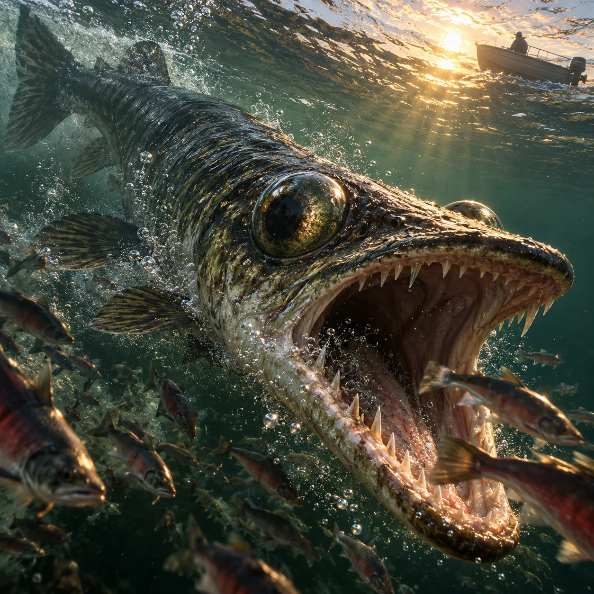
Giant pike eyewitness variant Iliamna aktif memburu sockeye.
Aura: Gargantuanpike soccer-eyes/skiffscale c12, huntingc10/c11.
Audit ciri dan sumber
- [object Object]
- [object Object]
- [object Object]
Native1254+2007Sangar yes. Giantpike c12dua hugeeyes/skiffscale, openmouth sockeye hunt c10/c11, onefish head/tail fins, no sharkhybrid. Skiff/salmoncomparison and active diagonal dominate. No text/aura/gore.
Review sumberONE original square premium painterly cinematic Mitoloka illustration of Iliamna Lake Monster, the giant northern-pike-like reported lake cryptid, specifically the witness variant with soccer-ball-sized eyes.
ANATOMY: ONE enormous northern-pike-shaped fish, long flattened duckbill pike snout, two round huge natural eyes each soccer-ball sized, pointed pike teeth, long muscular dark fish body, ordinary pike fins and ONE tail; length and width like an 18-foot hunters skiff [iliamna-lake-monster-c12]. Not a shark or sturgeon; no horns or legs.
MOMENT: lunge toward the lens under the lake surface after a scattered school of small sockeye salmon; gigantic open mouth and enormous spherical eye confront viewer, powerful tail sweeps water. Salmon escape without injury [iliamna-lake-monster-c10,c11].
POWER: active predatory hunting, ordinary displaced water and bubbles; no magical effects.
SCALE & CAMERA: extreme low underwater close angle, monster fills square diagonally, tiny salmon and a dim 18foot skiff seen through surface beside its body show matching scale [iliamna-lake-monster-c12].
LIGHT & WEATHER: one low warm sunset shaft entering dark green walnut water, hard rim on wet mouth and scales, bubbles.
SURFACE: rough scarred fish scales, wet teeth, realistic water.
SETTING: under Iliamna Lake Alaska surface [iliamna-lake-monster-c01,c06].
MOOD: overpowering fish cryptid attacking, not an ordinary fish portrait.
HARD CONSTRAINTS: no text, letters, logo, border, watermark; no extra heads or limbs; no borrowed film/game/anime/comic design; no nudity or explicit gore; no generic glow aura, neon outline, energy ribbons.
İmrə
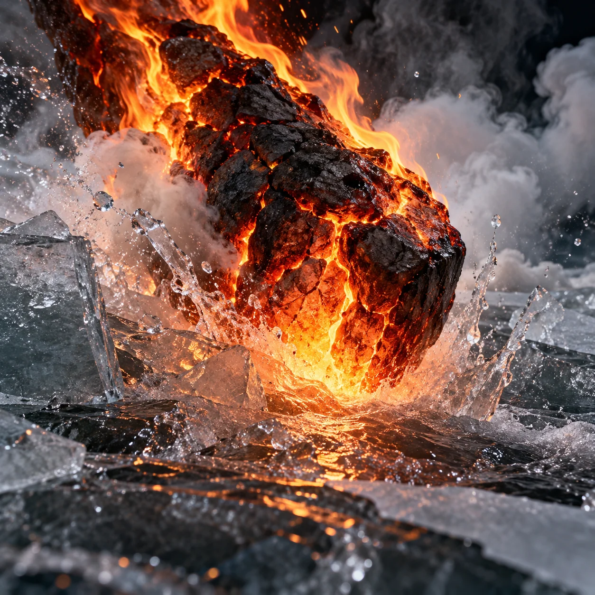
Cemre aktif ember memanaskan/mencairkan ice, tanpa tubuh rekaan.
Aura: Firetouch c09 dan ice melt c03 memberi manifestasiagung.
Audit ciri dan sumber
- [object Object]
- [object Object]
Native1254+200 Uji7yes: documentedfire-ember manifestation c09/c12 dominates; plungingcoal meltice c03 actualcontact/water/steam. No inventedbody, aura, text; no calmemptylandscape. Closeframing notsourcegiantsize.
Review sumberONE original square premium painterly cinematic Mitoloka illustration of Imre, the Turkic spring jinn depicted ONLY as its documented active Cemre manifestation, a falling ember of legendary fire warming the natural elements.
ANATOMY: NO invented humanoid body, face, eyes, wings or limbs; the SUBJECT is ONE enormous-in-frame irregular ember of fire, a solid dark coal with orange cracked incandescent surface and flickering real flame tongues [imr-c09,c12]. Size in image is close framing, not a claimed physical size.
MOMENT: plunge toward viewer into winter lake ice at the instant of contact; the coal dominates foreground, transparent ice slabs split and immediately melt around the hot point; water churns, ordinary white steam rolls backward [imr-c03,c09].
POWER: it falls on ice and melts it, later warms earth producing steam; show physical ice melting by hot ember only, no lightning or energy aura [imr-c03,c09].
SCALE & CAMERA: ice-level extreme close shot, single ember and melting ice fill square; no distant tiny fire, no empty landscape.
LIGHT & WEATHER: one ember's orange combustion light, black walnut night, dense uncolored steam, ice droplets.
SURFACE: cracked burning charcoal, wet clear fractured ice, opaque white steam.
SETTING: frozen natural water at winter's end, coming spring [imr-c03,c06].
MOOD: overwhelming primordial warmth breaking winter, majestic and dynamic rather than demonic.
HARD CONSTRAINTS: no text, letters, logo, border, watermark; no extra heads or limbs; no borrowed film/game/anime/comic design; no nudity or explicit gore; no generic glow aura, neon outline, energy ribbons.
Imsety
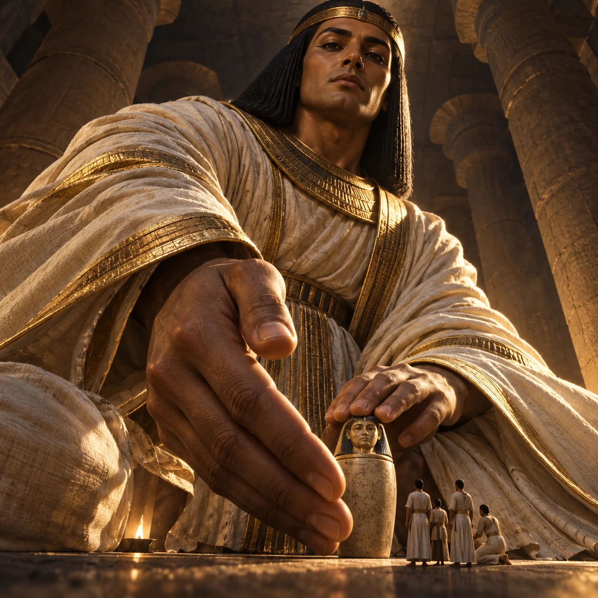
Imsety humanheaded guardian shelters sealedliverjar; scalehonorificallegory.
Aura: Human-headed god c01/c04/c06 dan guardianshieldliverc04 memberi wibawa.
Audit ciri dan sumber
- [object Object]
- [object Object]
- [object Object]
Native1254+200 Sangar7ya: monumental honorificdeity evident from tiny adult attendants by fingers; humanhead c01/c04/c06, guardianhand shelteringsealedjar c04, sacred non-evil, actionshield. No magic/aura/gore/text. Scale allegory documented editorial;01ordinaryman archived.
Review sumberONE original square premium painterly cinematic Mitoloka illustration of Imsety, the human-headed Egyptian protector god guarding the canopic vessel containing the liver of the deceased.
ANATOMY: ONE human male head, two human eyes, two arms, two legs under fully opaque richly folded ceremonial linen robes; composed stern godly face. No animal head, no horns, no invented weapon or solar disk. A TINY sealed canopic vessel with a human-head lid, only HALF THE HEIGHT OF HIS FINGERNAIL, is protected below his hands; no exposed organ [imsety-c01,c04,c06].
MOMENT: sweep a vast sheltering hand downward around the sealed liver jar while the other hand braces its lid, descend and lean protectively toward the viewer with commanding guardian gaze. His near hand and face command the frame, robe folds move, decisive active shielding.
POWER: protection of the liver and canopic vessel only, no physical magic or glow [imsety-c01,c04].
SCALE & CAMERA: extreme low angle, god fills entire square and looms over a tiny canopic jar in foreground; his body occupies a vast hypostyle chamber, his head reaches high stone ceiling. Several minute fully clothed adult funerary attendants at his fingertips establish an overwhelmingly colossal sacred divinity, his fingertip bigger than the attendants. Foreground jar and attendants must remain tiny compared with his hand; MONUMENTAL SCALE IS HONORIFIC EDITORIAL ALLEGORY OF DIVINE STATUS, not a source claim about body size. Never an ordinary standing man.
LIGHT & WEATHER: one low funerary oil flame offscreen, antique gold rim on linen and human face, very deep walnut shadows and suspended dust, no aura.
SURFACE: coarse ceremonial opaque linen, weathered stone jar, solemn natural skin.
SETTING: dark enormous funerary canopic chamber of plain UNINSCRIBED stone pillars without glyphs, an editorial staging of the attested liver-jar protection, south-associated guardian [imsety-c03,c04].
MOOD: sacred awe-inspiring guardian, respectful, protective and magnificent rather than evil.
HARD CONSTRAINTS: no text, letters, logo, border, watermark; no extra heads or limbs; no borrowed film/game/anime/comic design; no nudity or explicit gore; no generic glow aura, neon outline, energy ribbons.
Ipilja-ipilja
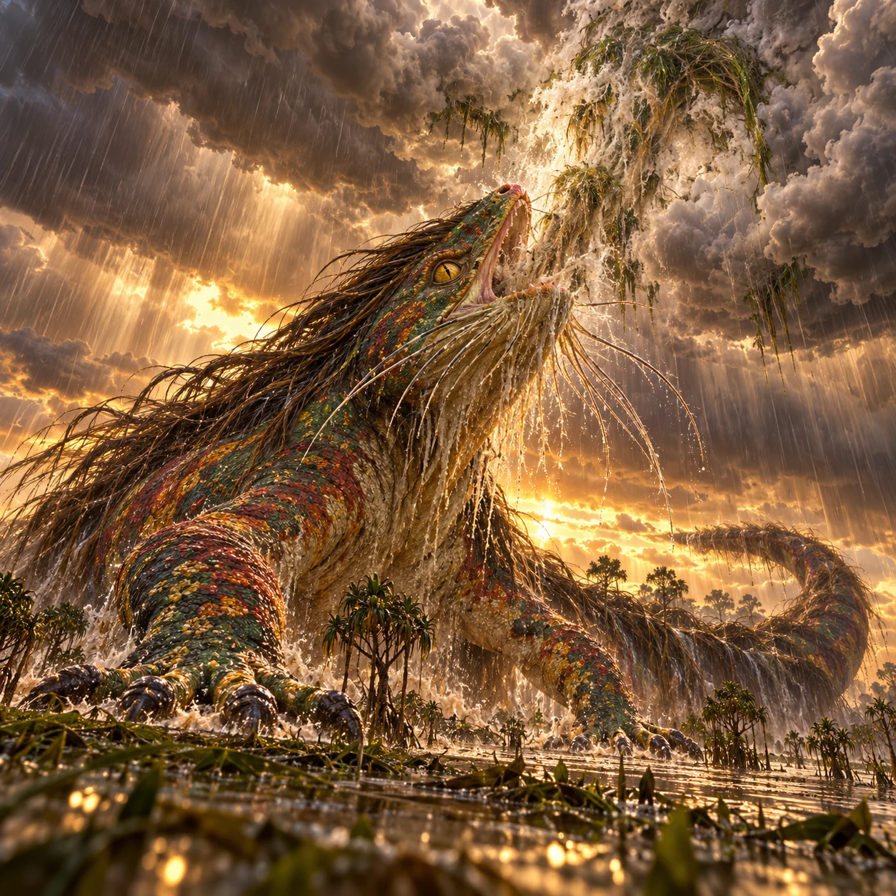
Giantgeckolonghairwhiskers mencipta awan dari swampwatergrass.
Aura: Giant100ft c03 + cloudmaking/rainc04/c05/c07.
Audit ciri dan sumber
- [object Object]
- [object Object]
- [object Object]
Native1254+2007Sangar yes: giant100ftgecko highlycoloredlonghairwhiskers c03; physical grasswaterjet into cloudboundgrass c04/c05, monsoonrainc07. Little trees establishsize; no lightning invented, no horns/wings/aura/text. Sacredagung.
Review sumberONE original square premium painterly cinematic Mitoloka illustration of Ipilja-ipilja, the giant gecko creator of monsoon rain and thunder in Anindilyakwa lore.
ANATOMY: ONE gecko head, two gecko eyes, FOUR splayed gecko legs, ONE long gecko tail; about ONE HUNDRED FEET long, highly colored skin, very long coarse hair along back and head, long distinct facial whiskers [ipilja-ipilja-c01,c03]. No dragon wings, horns, extra heads or serpentine legless body.
MOMENT: rear over swamp toward viewer, tip enormous gecko jaws upward and spew a physically heavy geyser of muddy swamp water and tangled green grass INTO THE SKY; jet transitions into towering real storm clouds held in loose grass tangles. Gecko roars amid monsoon rain, lower eye turns confrontationally down toward viewer [ipilja-ipilja-c04,c05,c07].
POWER: swampwater and grass become clouds, roar becomes thunder; actual water/grass/clouds/rain, NO lightning invented and no colored energy [ipilja-ipilja-c04,c05,c07].
SCALE & CAMERA: swamp-surface extreme low angle, giant gecko fills square diagonally, small swamp trees by his feet establish100ftscale. Head, whiskers and forelegs dominate.
LIGHT & WEATHER: one warm setting-sun break under storm, dark walnut shadows, rain rimmed in antique gold, heavy physical spray.
SURFACE: vivid mottled gecko skin in deep emerald/ochre/crimson, coarse streaming hair, muddy swamp water, knotted grass.
SETTING: Numarika swamp Groote Eylandt at start of monsoon [ipilja-ipilja-c02,c04].
MOOD: sacred awe-inspiring storm creator, overwhelming magnificent guardian presence rather than evil dragon.
HARD CONSTRAINTS: no text, letters, logo, border, watermark; no extra heads or limbs; no borrowed film/game/anime/comic design; no nudity or explicit gore; no generic glow aura, neon outline, energy ribbons.
Jengu
Menunggu gambar yang lolos audit
Jenu
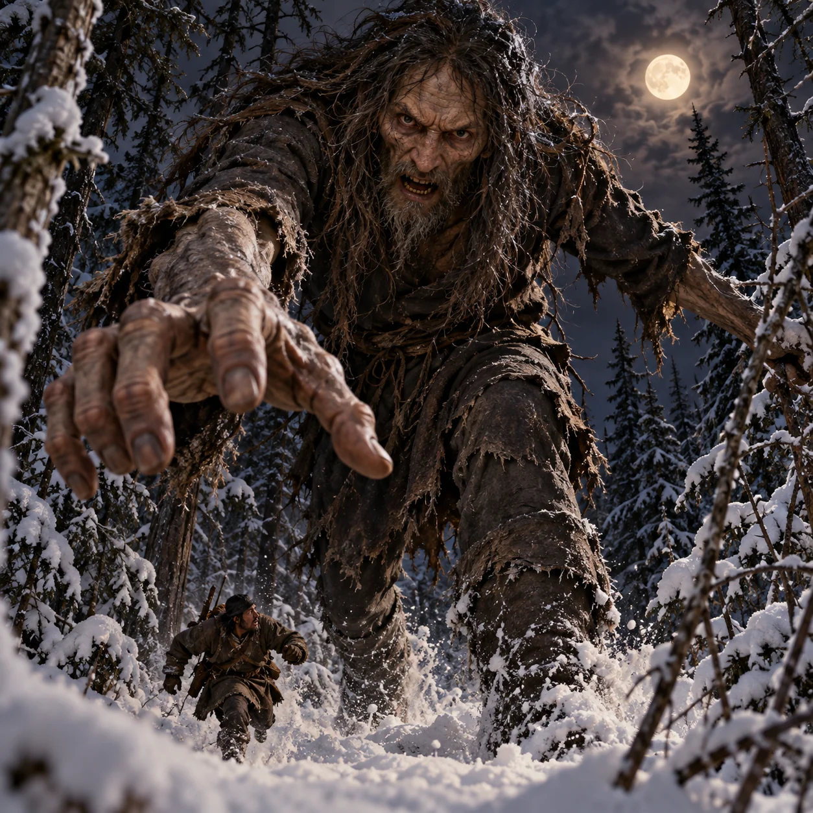
Hairyemaciated Jenu berburu musimwinter tanpa gore/antlers.
Aura: Hairyemaciatedgiant c01/c03 dan winterhuntc04/c08.
Audit ciri dan sumber
- [object Object]
- [object Object]
- [object Object]
Native1254+200 Sangar7yes: hairygauntgiant c01/c03, hollowface bonyknuckles intactskin, opaquecloth, tinyadult sizecomparison. Active winterhuntingreachc04, no antlers/skull/magicgore/auratext. Hair/cloth textures no copieddesign.
Review sumberONE original square premium painterly cinematic Mitoloka illustration of Jenu, the wild hairy emaciated human-transformed giant of Mi'kmaq and northern Wabanaki winter tales.
ANATOMY: ONE humanlike head, TWO eyes, TWO long bony arms, TWO long gaunt legs; giant covered in coarse matted hair, very emaciated hollow cheeks, sharp intact-skin cheekbones, knuckles and elbows protruding [jenu-c01,c03]. A fully opaque rough dark torn long tunic and trousers cover torso/hips, cloth clings to skeletal contours. Interpret bones poking as bony contours UNDER INTACT skin, NO exposed bone or wounds. NO antlers, horns, animal skull, claws, glowingeyes or ice armor.
MOMENT: stride out between winter trees directly toward viewer hunting, bend face low in ravenous snarl, reach one enormous gaunt hand toward lens; near bare knuckles and face sharply visible, opposite arm sweeps branches. A much smaller fullyclothed adult hunter flees far below, unharmed [jenu-c04].
POWER: human-hunting giant in winter, no physical magic or cold beams; iceheart is not external armor [jenu-c04,c08].
SCALE & CAMERA: extreme low snow-level view, giant fills square from face to knees, tiny fleeing adult near feet and tree comparison establishgiantsize [jenu-c01].
LIGHT & WEATHER: one low moon, cold rim on coarse hair, deep warm walnut darkness, ordinary kicked snowflakes.
SURFACE: tangled wet winter hair, weathered intact skin, ragged opaque cloth, crisp snow.
SETTING: northern Wabanaki winter woodland [jenu-c04,c06,c08].
MOOD: gaunt ravenous imposing giant, active predatory confrontation, no explicit cannibalism shown.
HARD CONSTRAINTS: no text, letters, logo, border, watermark; no extra heads or limbs; no borrowed film/game/anime/comic design; no nudity or explicit gore; no generic glow aura, neon outline, energy ribbons.
Jin Chan
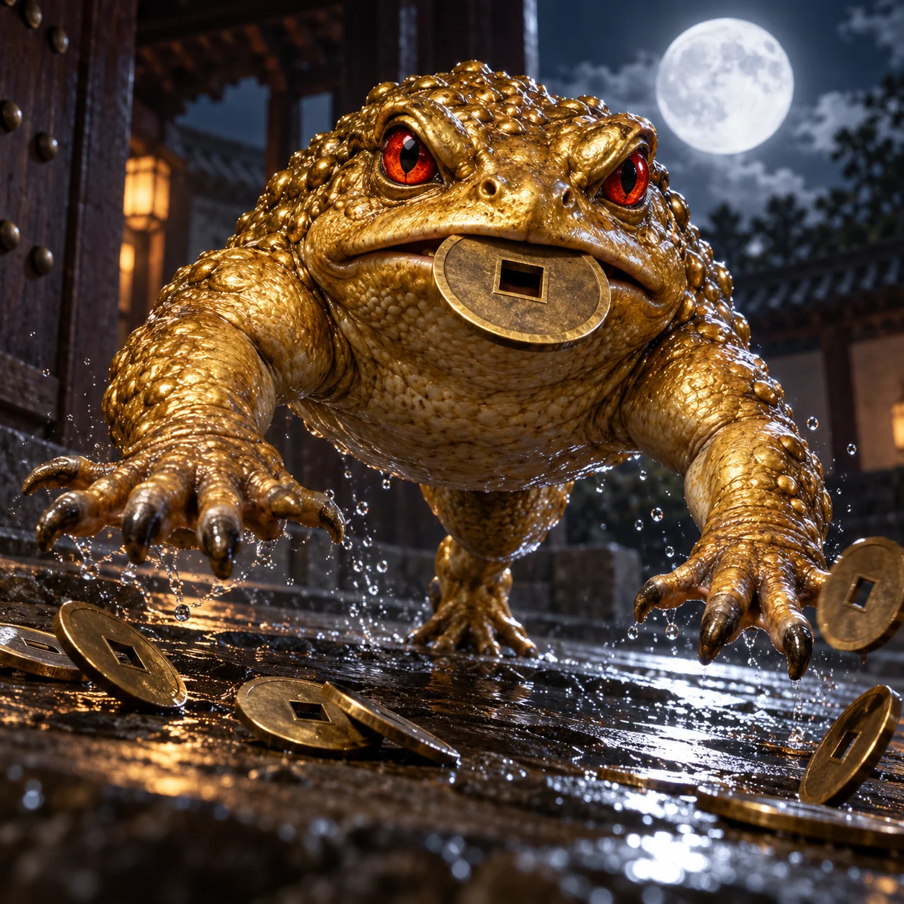
JinChan hidup golden3legs red-eyes plaincoinmouth saatfullmoon.
Aura: Redeyes/3legs/coin c03 dan fullmoon c02, wealthguardianc04.
Audit ciri dan sumber
- [object Object]
- [object Object]
Native1254+2007Sangar yes: THREE continuous limbs—two forelegs and ONEcentralhindleg visible underbelly; red2eyes/goldwartytoad/plainuninscribedcoin c01/c03/c07; fullmoon c02, activeleap splashingcoins physically. Livingwetbody notstaticstatue; imperiousguardian no aura/text/gore.
Review sumberONE original square premium painterly cinematic Mitoloka illustration of Jin Chan, the living golden three-legged prosperity toad of Chinese lore.
ANATOMY: ONE broad living toad head, TWO red eyes, golden warty skin, EXACTLY THREE LEGS TOTAL: two forelegs at left and right shoulders and ONE CENTRAL HINDLEG at the pelvis midpoint, NO pairedhindlegs. One plain round antique coin with square center hole held in mouth, coin is completely UNINSCRIBED with no letters or glyphs [jin-chan-c01,c03,c07]. Show all THREE legs and their clear body connections, no fourth limb hidden or implied.
MOMENT: spring forward from dark wet stone toward viewer, frontleft and frontright legs spread apart and thrust towardlens, ONE central rearleg visible straight back under belly, its single rearfoot pressing stone to propel leap; red eyes fixed imperiously forward, mouth clenches plain coin, scattering a few plain coins by physical contact.
POWER: attracts and protects wealth, represented by a handful of ordinary plain coins; NO magic or glowingmoney [jin-chan-c04].
SCALE & CAMERA: extreme low macro side-threequarter fullbody, toad fills square, belly tilted towardcamera so twofrontlegs and singlecentralrearleg are distinct. Natural toad proportions, dominance from framing notinventedgiantsize; creature ALIVE, NOT statue ornament.
LIGHT & WEATHER: ONE fullmoon, sharpsilver rim on antiquegold skin, deep walnutwetstone, small ordinary droplets.
SURFACE: moist irregular golden toad warts and breathing skin, tarnished plainmetal coin, rough wet stone.
SETTING: fullmoon appearance near a place expecting goodnews, dark unmarked courtyard threshold editorial [jin-chan-c02].
MOOD: sacred imposing prosperity guardian, intensely alive, awe-inspiring, never evil or cute mascot.
HARD CONSTRAINTS: no text, letters, logo, border, watermark; no extra heads or limbs; no borrowed film/game/anime/comic design; no nudity or explicit gore; no generic glow aura, neon outline, energy ribbons.
Julunggul
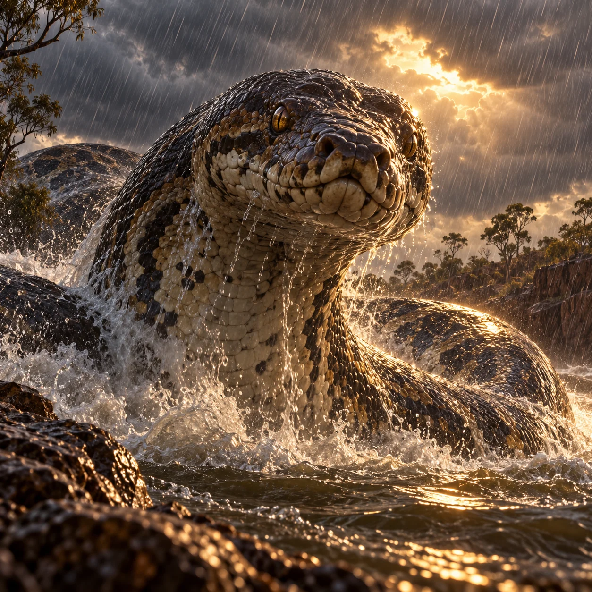
Great Python satu tubuh muncul dari water hole.
Aura: Keagungan Great Python c05 dan monsun c13, bukan aura generik.
Audit ciri dan sumber
- [object Object]
- [object Object]
- [object Object]
- [object Object]
Native1254 dan200px dilihat: tujuh Uji Sangar ya. Piton agung memenuhi bingkai; naik dari air aktif; hujan c13/cipratan fisik; kepala1 tanpa limbs; tiada tulisan; guardian monumental bukan hewan biasa.
Review sumberONE original square premium painterly cinematic Mitoloka illustration of Julunggul, the great python and respected Yolngu water-hole guardian.
ANATOMY: one python head, two eyes, one massive continuous limbless snake body, no wings; choose the single-body great-python variant [julunggul-c04, julunggul-c05].
MOMENT: surge upward out of the dark water hole toward the viewer, head above the close foreground, enormous coils displacing water, watchful guardian authority.
POWER: monsoon rain driven sideways by west wind; water splashing naturally from the emerging great snake [julunggul-c13]. No rainbow glow or invented magic.
SCALE & CAMERA: extreme low water-level angle; great python fills almost the entire frame, small distant trees establish scale.
LIGHT & WEATHER: one warm break in monsoon cloud rim-lights the wet head, deep walnut shadows, heavy wind-driven rain.
SURFACE: wet dark python scales, rough riverbank earth, water beads.
SETTING: its special Arnhem Land water hole, dark bank and distant vegetation [julunggul-c09].
MOOD: awe-inspiring revered guardian, imposing and dignified, never evil, cute, calm or decorative.
HARD CONSTRAINTS: no text, lettering, logo, border, frame or watermark; exactly one head, no limbs or wings; no design borrowed from film, game, anime or comic; no nudity, victims or explicit gore; no generic glow aura, neon outline or energy ribbons.
Ka'a Póra
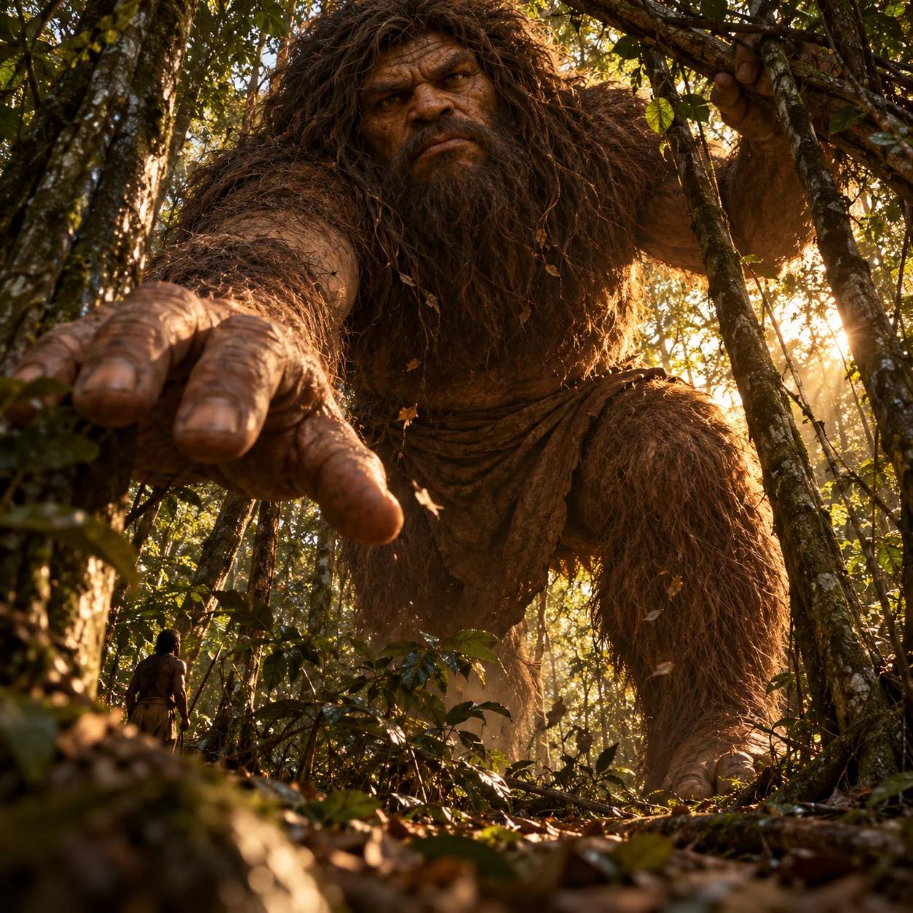
Pria raksasa berbulu dan kepala besar dari varian Parana.
Aura: Ukuran raksasa dan kepala besar c07 menjulang di hutan c04.
Audit ciri dan sumber
- [object Object]
- [object Object]
Native1254 dan200px dilihat; tujuh UjiSangar ya: giant hairy head c07, skala berbanding manusia, gestur aktif branch+reaching, tiada magic, anatomi2arms2legs, tiada text, tidak ordinaryhuman.
Review sumberONE original square premium painterly cinematic Mitoloka illustration of Ka'a Pora, the gigantic hairy forest spirit of Parana.
ANATOMY: one enormous humanlike hairy man with an unusually large head, two eyes, two arms and two legs; dense long body hair and an opaque plain bark-brown waist wrap [ka-a-pora-c07]. No horns or invented animal anatomy.
MOMENT: push aside a heavy hanging branch while leaning down toward the viewer, one broad hand reaching into the close foreground, mouth set in grave authority, the huge head looming above.
POWER: no visible supernatural effect; documented giant anatomy and the spirit's direct emergence from the forest provide awe [ka-a-pora-c07].
SCALE & CAMERA: extreme low angle, full giant crouching between small forest trunks, a distant adult silhouette smaller than his forearm provides scale.
LIGHT & WEATHER: one warm shaft of late sunset through canopy, deep walnut shadows, natural disturbed leaf dust.
SURFACE: coarse matted hair, weathered skin, wet tree bark, rough opaque cloth.
SETTING: the forest of Parana, dense trunks and vegetation [ka-a-pora-c07, ka-a-pora-c04].
MOOD: imposing supernatural forest authority, dangerous and awe-inspiring, never cute, calm or decorative.
HARD CONSTRAINTS: no text, lettering, logo, border, frame or watermark; no extra heads, limbs or fingers; no film/game/anime/comic design; no nudity or gore; no generic glow aura, neon outline or energy ribbons; no pipe, pig or flames from alternative versions.
Kaimingshou
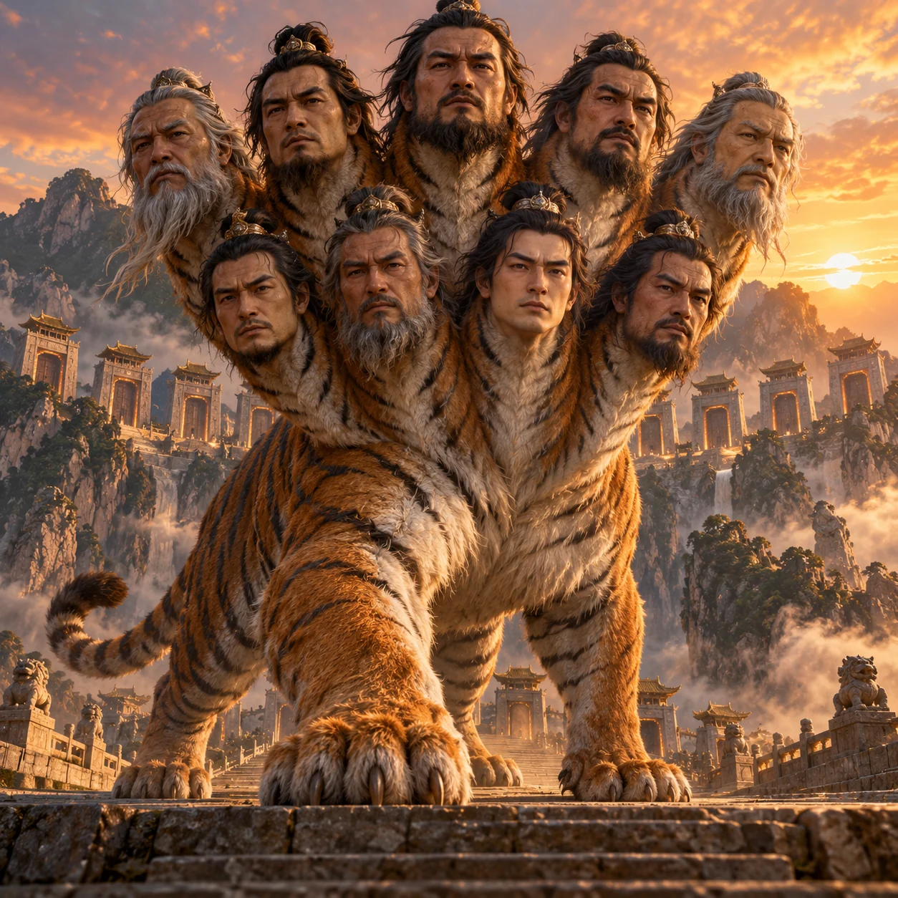
Penjaga bertubuh harimau besar, sembilan kepala masingmasing wajahmanusia.
Aura: Keagungan9wajah c04 dan tubuhharimaubesar c03 melindungi Kunlun c02.
Audit ciri dan sumber
- [object Object]
- [object Object]
- [object Object]
Native1254 dan200px dilihat; tujuhUjiSangar ya. Tepat9kepala wajahmanusia dihitung5atas+4bawah, tubuhharimau1/fourlegs/tail1; melangkah forepaw ke threshold aktif; no supernatural effects; divineprotectiveawe; tanpa tulisan atau desainpinjaman.
Review sumberONE original square premium painterly cinematic Mitoloka illustration of Kaimingshou, the divine guardian of the nine Kunlun gates.
ANATOMY: ONE immense tiger body, exactly FOUR tiger legs, one tiger tail, and EXACTLY NINE distinct necks with NINE human-faced heads [kaimingshou-c03, kaimingshou-c04, kaimingshou-c08]. Arrange the nine heads in a clean fan: five in the upper row and four in the lower row, all nine faces fully visible, no face hidden or merged. Each head has two human eyes and a stern adult human face with weathered skin, never feline faces. No tenth head. Tiger fur only on the body and necks.
MOMENT: advance one heavy forepaw onto the stone threshold, all nine grave faces turn toward the approaching viewer, tiger shoulders tense in active guardianship.
POWER: no documented supernatural effects; awe through nine-head anatomy and the massive guardian body only.
SCALE & CAMERA: low close frontal-three-quarter angle; the head fan fills the upper two thirds while the large tiger body and forepaws fill the base; tiny gates recede behind.
LIGHT & WEATHER: one warm sunset side-light, deep walnut shadows, natural threshold dust.
SURFACE: coarse striped tiger fur, weathered human faces, ancient rough stone.
SETTING: nine gates of Kunlun, lower capital of the heavenly ruler, mountain stone gateway [kaimingshou-c02, kaimingshou-c07, kaimingshou-c08].
MOOD: awe-inspiring divine protector, respectful and imposing, never evil, cute, calm or decorative.
HARD CONSTRAINTS: exactly nine visible faces, exactly four legs, no extra limbs; no text, lettering, logo, border, frame or watermark; no film/game/anime/comic design; no nudity or gore; no generic glow aura, neon outline or energy ribbons.
El Familiar
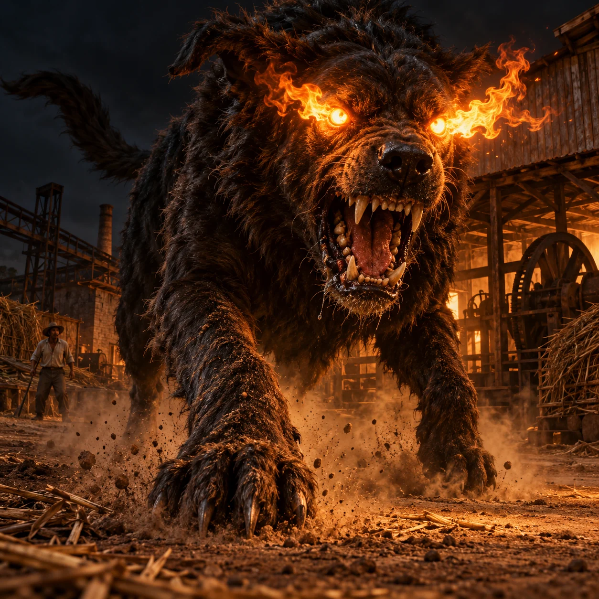
Hugeblackdog dengan matamengeluarkan api.
Aura: Ukuranmanusia/matafire c05 mendominasi ambangpabrik c01.
Audit ciri dan sumber
- [object Object]
- [object Object]
- [object Object]
Native1254 dan200 dilihat: tujuhUjiSangar ya. Hugeblackdog charge aktif dengan openjaws, fire dari2eyes c05,4legs tanpa extra, worker/skala; cottonshed/sugarmill settingc01/c06; tanpa tulisan, bukan ordinaryanimal.
Review sumberONE original square premium painterly cinematic Mitoloka illustration of El Familiar, the man-tall black dog spirit of Argentine sugar mills.
ANATOMY: one huge black dog as tall as an adult man at the shoulder, one head, two blazing eyes, four canine legs and one tail [kaka-c05].
MOMENT: spring out of the mill shed darkness toward the viewer, forepaws striking the dusty yard, enormous jaws open in threat.
POWER: its blazing eyes cast short real flames forward, lighting the muzzle and curling into air [kaka-c05]; no fire from mouth.
SCALE & CAMERA: extreme low close three-quarter angle, enormous dog dominates from paws to ears; tiny adult worker beside distant shed demonstrates man-tall dog.
LIGHT & WEATHER: dominant natural orange eye-fire illuminating black fur, deep dark brown moonless shadows, dust from forepaw impact.
SURFACE: dense shaggy black dog fur, soot, yellowed teeth, rough shed wood.
SETTING: sugar mill yard in northwestern Argentina, worker sheds and indistinct sugarcane machinery [kaka-c01, kaka-c06].
MOOD: menacing, dangerous and imposing, never ordinarypet, cute, calm or decorative.
HARD CONSTRAINTS: no text, lettering, logo, border, frame or watermark; no extra heads, limbs or fingers; no film/game/anime/comic design; no nudity or explicit gore; no generic glow aura, neon outline or energy ribbons.
Kaldaz
Menunggu gambar yang lolos audit
Kāliya
Menunggu gambar yang lolos audit
Kallikantzaros
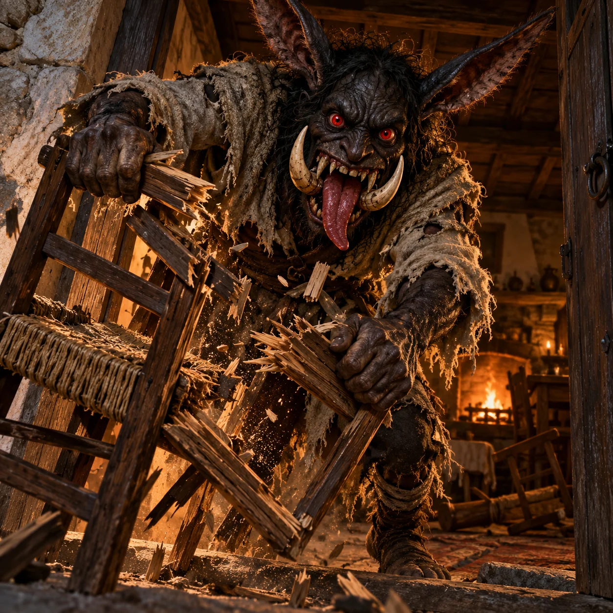
Satu Kallikantzaros mendobrakpintu dan mematahkanfurnitur.
Aura: Tuskedmouthc08 dan destructiveforcec07/c09.
Audit ciri dan sumber
- [object Object]
- [object Object]
- [object Object]
Native1254 and200px inspected: all7Sangar yes.1subject fills doorway;2tusked face threatening at200;3chair snapped mid-lunge;4physical furniture break c07/c09 only;5one blackface,2red eyes,2donkeyears,2tusks,redtongue,twoarms/twolegs;6no text/frame/copiedIP/gore;7neither ordinaryhuman nor passive. Redeyes not magicalfire.
Review sumberONE original square premium painterly cinematic Mitoloka illustration of a Kallikantzaros, the malicious underground creature of Greek folklore.
ANATOMY: one black-faced humanlike creature with two glaring red eyes, two long donkey ears, an enormous mouth flanked by two ferocious tusks, and one lolling blood-red tongue [kallikantzaros-c08]; two arms and two legs, fully opaque ragged wool clothing editorial.
MOMENT: wrench apart a thick timber chair while lunging through a cottage doorway toward the viewer, splinters flying from its terrible strength [kallikantzaros-c07, kallikantzaros-c09].
POWER: physical superhuman force snaps wooden furniture, no magic beams or eye-fire [kallikantzaros-c07, kallikantzaros-c09].
SCALE & CAMERA: extreme low close doorway angle; the tusked face and wrenching hands dominate the frame, normal body scale emphasized through tight perspective.
LIGHT & WEATHER: one cottage hearth fire offscreen casts copper side-light; deep walnut night shadows, dust and splinters.
SURFACE: rough dark face, chipped tusks, coarse wool, splintered aged wood.
SETTING: house doorway in the twelve days of Christmas, broken furniture and dim chimney at rear [kallikantzaros-c02, kallikantzaros-c07].
MOOD: menacing malevolent mischief, dangerous, never cute, calm or decorative.
HARD CONSTRAINTS: no text, lettering, logo, border, frame or watermark; no extra heads, limbs or fingers; no film/game/anime/comic design; no nudity or explicit gore; no generic glow aura, neon outline or energy ribbons.
Kamappa
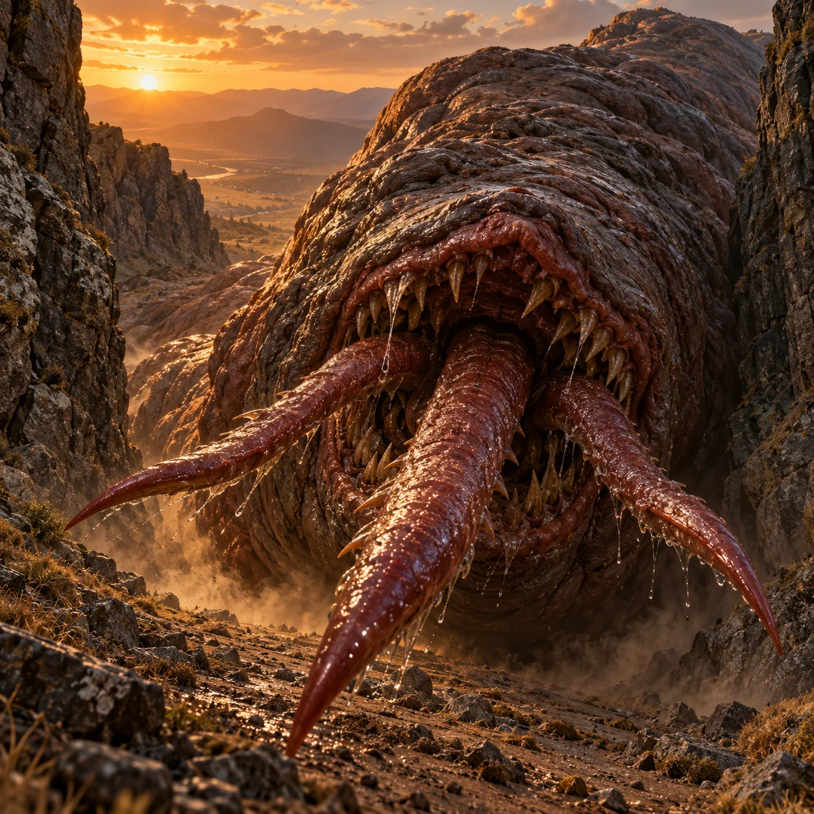
Shapeless swollen devourer with multiple sharp tongues at the valley pass.
Aura: Vast body and weapon tongues c02/c08, wedged pass c14.
Audit ciri dan sumber
- [object Object]
- [object Object]
- [object Object]
Native1254+200 inspected,7yes:1vast shapeless mass dominates;2three sharp tongues threatening at200;3tongues thrust while bulk pushes pass;4dust physicalcontact only/weapon tongues c02 and wedgingc14;5no eyes/wings/limbs,one jawc10,multiple tonguesc02,immense bodyc08/c13;6no text/frame/copiedIP/nudity/gore;7not mundane animal or landscape. Teeth are jaw editorial texture, not extra named powers.
Review sumberONE original square premium painterly cinematic Mitoloka illustration of Kamappa, the immense shapeless Basotho devourer.
ANATOMY: an immense shapeless continuous irregular fleshy mass, no recognizable animal skeleton, no eyes, no horns, no wings, no limbs. One frightful open jaw emerges from the front of the mass, multiple long sharp tongues thrust outward as weapons [kamappa-c02,c08,c10,c13].
MOMENT: surge toward the viewer with tongues stabbing the air, swollen bulk physically wedged in a narrow mountain pass [kamappa-c02,c14].
POWER: engulfing immense expanding mass, no magical energy, no victims or gore [kamappa-c02].
SCALE & CAMERA: very low near-ground camera; mouth and three visible sharp tongues dominate; vast irregular bulk trails out of view between tiny high cliff walls.
LIGHT & WEATHER: one low copper sunset from the side, deep walnut shadows, natural dust from heavy bulk pressing against earth.
SURFACE: coarse wrinkled dark organic skin, saliva and mud, realistic rock.
SETTING: narrow pass at a Basotho valley entrance [kamappa-c14].
MOOD: overwhelming menace, vast and horrible, never cute or decorative.
HARD CONSTRAINTS: no text, lettering, logo, border, frame or watermark; no extra heads or limbs; no design from films, games, anime or comics; no nudity, no explicit gore; no generic glow aura, neon outlines, floating symbols or energy ribbons.
Kāmohoaliʻi
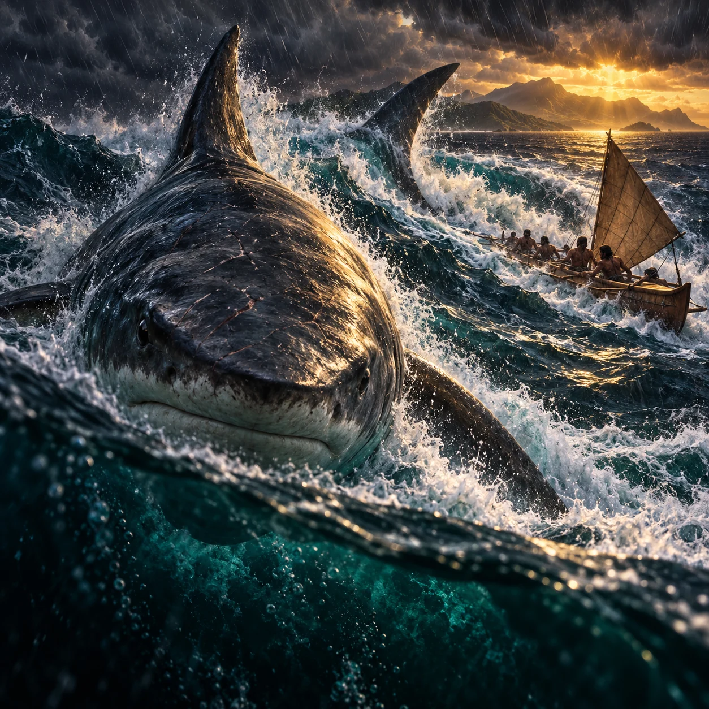
Sacred monumental editorial shark allegory leading lost canoe, not source-definedgiantbody.
Aura: Shark king c04 embodied as protective shark c07/c08; guiding tail c03.
Audit ciri dan sumber
- [object Object]
- [object Object]
- [object Object]
Native1254+2007yes:1monumental editorialsharkhead dominatesforeground;2sternprotectiveimmensity stronglyawe at200;3visible mighty tailturn and turbulent curved wake guides imperiledcanoe;4tailguidancec03 only, natural squall/rain editorial NOTstormpower;5one sharkhead/body/fins/tail c07/c08, monumental scale expliciteditorialallegory notsourcegiantsize;6no text/frame/copiedIP/gore;7urgentdivineguardian escort neither calmwildlifephoto nor evilattack.01rootrejected andwhole receipt/native preserved.
Review sumberONE original square premium painterly cinematic Mitoloka illustration of Kamohoalii, sacred Hawaiian shark god actively rescuing and guiding lost sailors home.
ANATOMY: ONE mighty shark incarnation, one head, two eyes, normal shark fins and one powerful tail, no human parts or crown [kamohoali-i-c07,c08]. A sacred monumental visual allegory, NOT a factual claim that sources specify giant body size.
MOMENT: drive protectively toward the low viewer, head lowered with powerful stern authority, tail flexing sharply outward in a forceful visible guiding stroke. An imperiled voyaging canoe with sailors desperately holding the gunwales follows his curved tail wake toward the distant safe island [kamohoali-i-c03]. Mouth CLOSED. Not attack, not friendly smiling wildlife.
POWER: real huge displaced water curls behind the sharply moving guiding tail; physical wake visibly provides a path for the lost canoe [kamohoali-i-c03]. Weather and waves are editorial natural conditions, NOT a claim he creates storms. No fire, steam, magic beams or aura.
SCALE & CAMERA: extreme low split-water close view looking UP at the shark's towering shoulder and great dorsal fin, looming head fills foreground, enormous tail and turbulent curved wake dominate the rest. Canoe much smaller as a sacred monumental editorial allegory, not asserted source anatomy size.
LIGHT & WEATHER: dark threatening ocean squall, ONE narrow antique-gold break of sunset side-light across the shark brow, deep black-brown sea shadows, heavy rain and violent ordinary natural waves.
SURFACE: rugged scarred gray shark skin, dark emerald depths, heavy textured water and foam, premium painterly brushwork, not wildlife stock photography.
SETTING: dark waters around Maui and Kahoolawe with a far safe Hawaiian island [kamohoali-i-c02].
MOOD: overwhelming sacred awe and divine protective authority, benevolent rescuer amid danger, no evil grin, no attacking canoe, no victims or gore.
HARD CONSTRAINTS: no text, lettering, logo, border, frame or watermark; no extra body parts; no film/game/anime/comic design; no nudity, gore, glow aura, neon or energy ribbons.
Kanedama
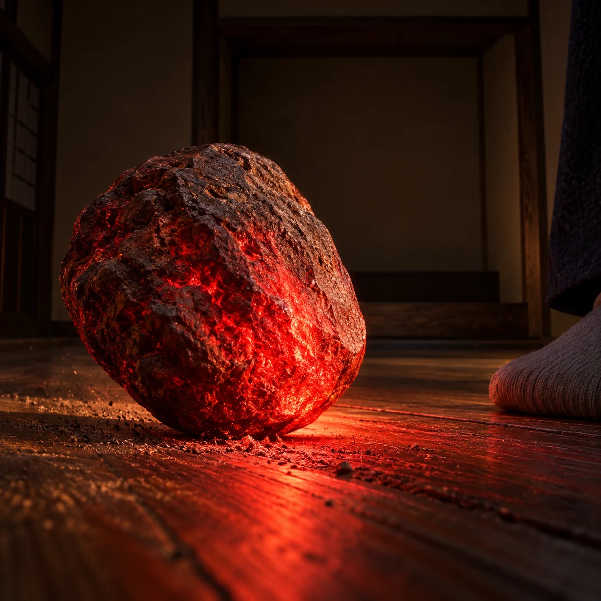
Numazu account of natural-state red-light object rolling at night.
Aura: Red-light rolling presence c06/c10, auspicious household c01/c04.
Audit ciri dan sumber
- [object Object]
- [object Object]
- [object Object]
Native1254+200 inspected,all7yes:1naturalstate object dominates macro;2redlight powerful uncanny at200;3tilted stone rolling at feet with dust contact;4redlight physically reflected on floor fromc06/c10, no surrounding generic aura;5unworked irregular object nofacelimbs or coinlettering;6empty tokonoma no text/frame/copiedIP/gore;7active documented manifestation not landscape or everyday stone stilllife. Attempt01 rejected backgroundcalligraphy retained.
Review sumberONE original square premium painterly cinematic Mitoloka illustration of Kanedama, the auspicious Japanese money spirit appearing as an unworked natural object with red light.
ANATOMY: ONE rough irregular unworked rounded natural stone, no face, eyes, limbs, engraving or coin design [kanedama-c06]; natural state maintained.
MOMENT: roll right toward the viewer's feet at night, stone tipped onto one edge, scraping fine real dust across old wooden floor [kanedama-c06].
POWER: the stone itself gives off deep red light, directly illuminating nearby wood grain and ordinary opaque cloth feet at frame edge; light confined to object and surfaces, no aura cloud [kanedama-c06,c10].
SCALE & CAMERA: extreme floor-level macro, stone occupies most of image, small incidental human cloth foot at far edge demonstrates close camera not gigantic object.
LIGHT & WEATHER: dominant natural-looking red light from the stone itself, deep walnut night shadows.
SURFACE: rough porous dark rusty stone, unpolished irregular surface; aged wood and dust.
SETTING: Japanese room with COMPLETELY EMPTY dark tokonoma recess behind, bare plain walls and floor, NO hanging scroll, NO wall art, NO paper signs, NO drawings or calligraphy anywhere, night [kanedama-c06].
MOOD: uncanny and awe-inspiring auspicious presence, never evil; powerful object rather than mundane still life.
HARD CONSTRAINTS: no text, lettering, logo, border, frame or watermark; no extra heads or limbs; no design from films, games, anime or comics; no nudity, no explicit gore; no generic glow aura, neon outlines, floating symbols or energy ribbons.
Kanglā shā
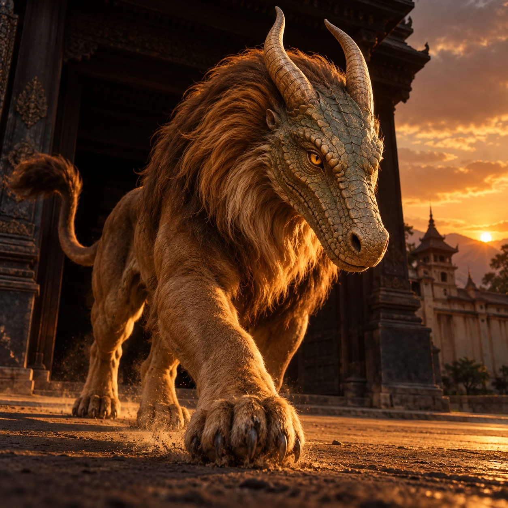
Living two-horned dragon-headed lion guardian at palace entrance.
Aura: Lion-dragon anatomy c01 and sacred royal guardianship c01/c02/c06.
Audit ciri dan sumber
- [object Object]
- [object Object]
Native1254+200 inspected7yes:1living guardian fillsframe;2majestic hornedreptile head/paw at200;3forwardprotectivestride,pawdust;4no magicaleffects,onlystride dust;5lionbody/felinelegs/tail with ONE longplateddragonhead/2eyes/EXACTLY2horns c01,no facialspikes,wings;6notext/frame/copiedIP/gore;7living active sacredhybrid notstatue/ordinarylion.01 rejected felinehead/extra facials pikes archived. Closeframing conveys majesty without sourcegiantsize.
Review sumberONE original square premium painterly cinematic Mitoloka illustration of Kangla Sha, sacred Meitei guardian dragon lion.
ANATOMY: ONE living lion body with four muscular feline legs, one lion tail, ONE clearly REPTILIAN DRAGON HEAD with a LONG elongated reptile snout and reptile nostrils, entirely smooth-edged plated scales and NO feline nose or feline face, bearing EXACTLY TWO prominent horns, two eyes; no wings, no extra horns, NO facial spikes, NO cheek spikes, NO brow spikes, NO dorsal spikes [kangla-sha-c01]. Living warm skin, fur, muscles, not stone or sculpture.
MOMENT: stride protectively out of the shadowed royal palace entrance toward the viewer, front paw raised and reaching into foreground, head lowered with sovereign vigilance.
POWER: no documented magical effect; grandeur comes only from anatomy, movement, texture and light.
SCALE & CAMERA: extreme low close three-quarter angle; horned dragon head and lion chest fill upper frame, four legs legible, no invented giant body size.
LIGHT & WEATHER: one narrow low amber sunset cuts across otherwise very dark courtyard, deep brown palace shadows, fine dust from paw contact.
SURFACE: tawny dark lion fur, real dragon scales on head, two ivory-brown horns, rough courtyard earth.
SETTING: entrance of Meitei royal palace, distant understated architecture [kangla-sha-c06].
MOOD: sacred awe-inspiring benevolent guardian and royal dignity, never evil, cute or decorative.
HARD CONSTRAINTS: no text, lettering, logo, border, frame or watermark; no extra heads or limbs; no design from films, games, anime or comics; no nudity, no explicit gore; no generic glow aura, neon outlines, floating symbols or energy ribbons.
Kaupe
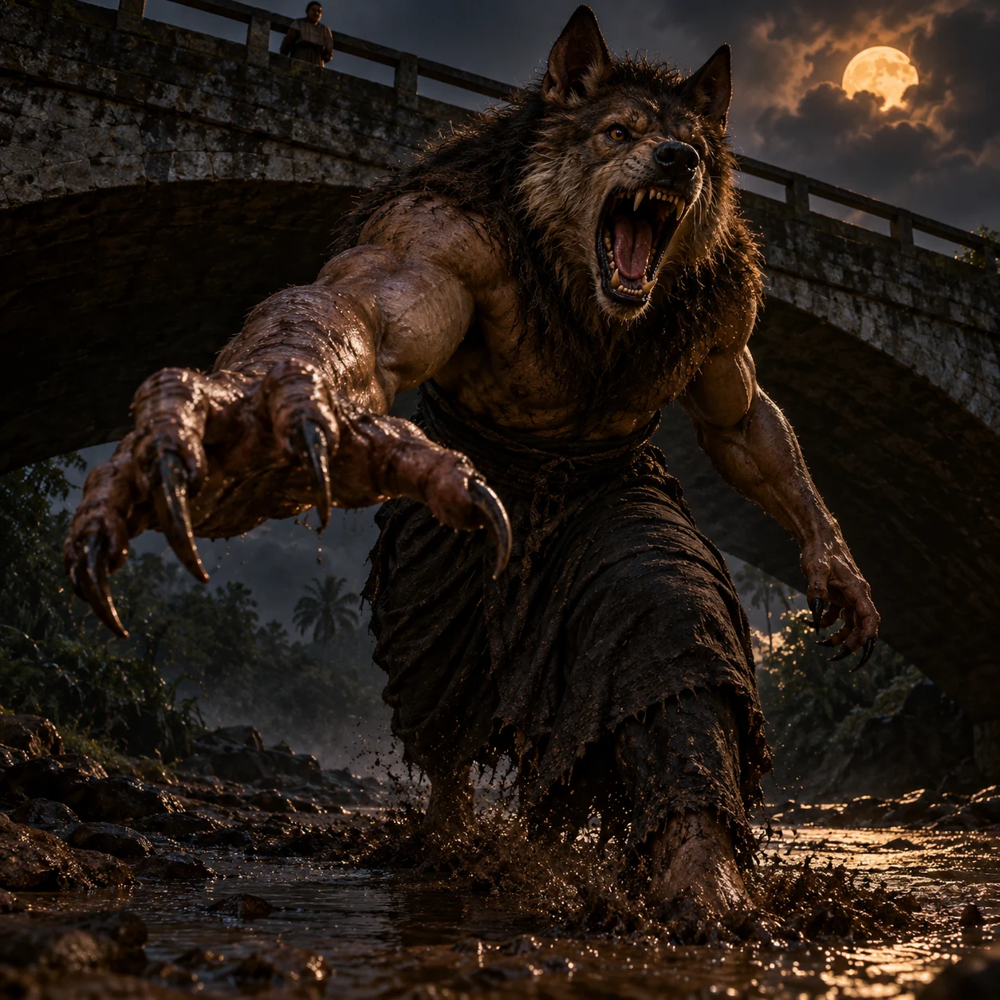
Enormous dog-headed male spirit calling beneath Kipapa Bridge.
Aura: Enormous canine head/claws c03 and calling lure c05.
Audit ciri dan sumber
- [object Object]
- [object Object]
- [object Object]
Native1254+200 inspected7yes:1enormous canine-headed man fillsframe;2claws/mouth menace at200;3forward lunge and open callingmouth;4no soundmagic, only c05 call and naturalmud contact;5one caninehead2eyes2arms2humanlegs/sharpclaws c03, opaque waistanklegarment;6notext/frame/copiedIP/gore;7distinct giantcaninehuman spirit with small adult bridge scale, not ordinaryhuman/animal. No Poki traits c09 used.
Review sumberONE original square premium painterly cinematic Mitoloka illustration of Kaupe, the enormous canine-headed calling spirit of Hawaii.
ANATOMY: one enormous male human body, ONE canine head, two eyes, two arms, two human legs, sharply clawed hands [kaupe-c03]. Fully opaque dark rough cloth garment from waist to ankles editorial; no nudity, no quadruped body.
MOMENT: lunge out from under the bridge toward the viewer, one clawed hand reaching foreground, canine mouth open mid deceptive cry [kaupe-c01,c05].
POWER: mimic a distressed human cry through open mouth; no magical sound rings or beams [kaupe-c05].
SCALE & CAMERA: low close three-quarter view; enormous body almost fills bridge clearance; one tiny distant clothed adult on bridge gives documented enormous scale [kaupe-c03].
LIGHT & WEATHER: one amber moon through dark clouds, deep damp walnut shadows, disturbed mud under foot.
SURFACE: coarse canine fur, sharp claws, wet human skin on arms, rough opaque fabric, damp bridge masonry.
SETTING: beneath Kipapa Bridge [kaupe-c04].
MOOD: dangerous malevolent predator, no victims or gore.
HARD CONSTRAINTS: no text, lettering, logo, border, frame or watermark; no extra heads or limbs; no design from films, games, anime or comics; no nudity, no explicit gore; no generic glow aura, neon outlines, floating symbols or energy ribbons.
Kawaakago
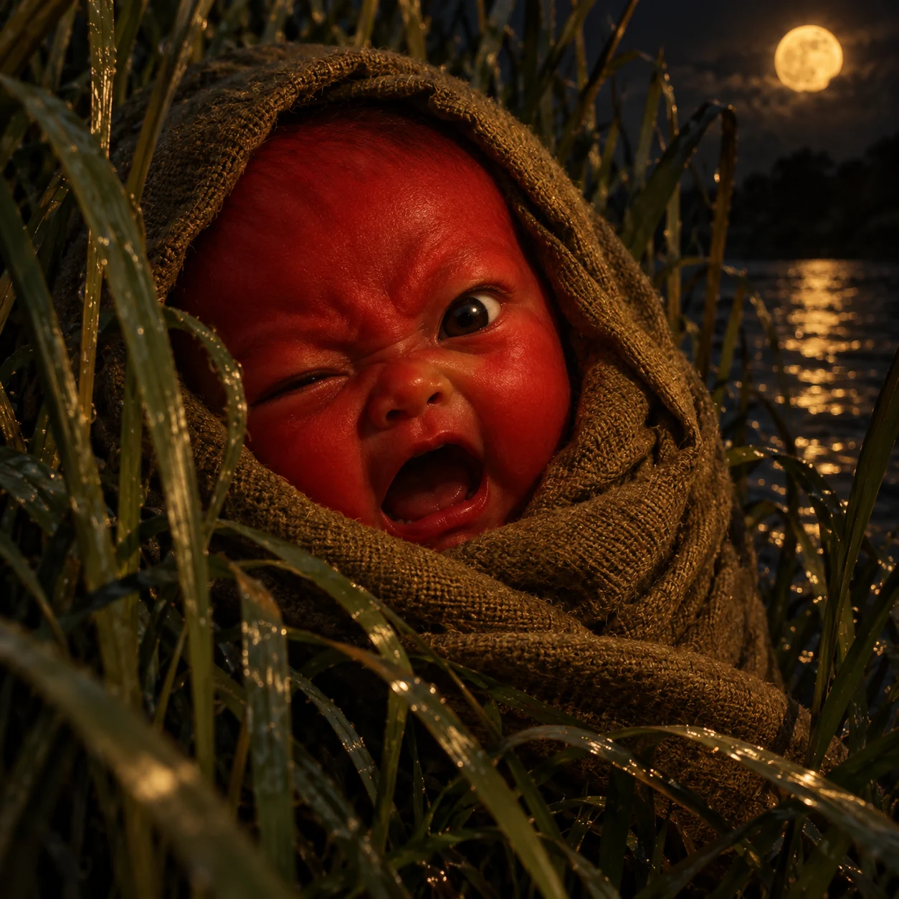
Small red-skinned crying yokai in opaque cloth among riverside reeds.
Aura: Uncanny red infant c03 and lure cry beside deep water c04/c05.
Audit ciri dan sumber
- [object Object]
- [object Object]
- [object Object]
Native1254+2007yes:1extreme redface fillsmostframe;2unusually solid redskin and sharply watching openeye create uncanny risk at200;3mouth imitates cry while oneeye watches approachingviewer midprank c04;4no magic effect, riverside lurecryc04/c05 only;5onebabyhead2eyes(oneclosed), smallinfant/redskin c01/c03, allbody/neck/arms/hands obscured by fullyopaque secured swaddle and reeds;6no text/frame/copiedIP/nudity/gore;7intentionally alert uncanny redyokai lure rather than ordinarydistressedbaby,cute or evilmonster.01tooloutputmoderationblockedsexual/noPNG recorded,02ordinarybaby rejected. Editorialfaceexpression conveys prank, no fangs/horns/newpowers.
Review sumberONE original square premium painterly cinematic Mitoloka illustration of Kawaakago, the Japanese riverside spirit in the form of a small SWADDLED supernatural VERMILION-RED infant [kawaakago-c01,c03].
ANATOMY: Show ONLY one small UNNATURALLY SOLID VERMILION-RED face, red across the entire forehead, nose and cheeks, NOT pink or a natural crying flush, emerging from a THICK FULLY OPAQUE DARK OCHRE SWADDLED BLANKET. The blanket completely covers and conceals the entire body, neck, chest, shoulders, both arms, hands and lower body. NO skin visible anywhere below the face. Dense riverside reeds hide the lower blanket bundle [kawaakago-c01,c02,c03]. No horns, fangs or claws.
MOMENT: the red face leans out from its cloth bundle between wet reeds toward the close viewer, mouth open deliberately imitating a baby cry while ONE EYE is wide open directly WATCHING the viewer mid-prank, alert calculated gaze rather than distressed natural sobbing, no tears; a yokai lure meant to attract a passerby [kawaakago-c04]. No reaching bare hand.
POWER: no magic effect, just an uncanny prank cry at the dangerous water edge; no victims depicted [kawaakago-c04,c05].
SCALE & CAMERA: extreme close low riverbank view, EXTREME CLOSE-UP, vermilion face fills most of the image, only edges of opaque cloth bundle seen, normal reeds very large relative to tiny infant, not a giant baby. All blanket edges secure and closed.
LIGHT & WEATHER: one low amber moon catches red face; deep dark walnut shadows across opaque blanket and deep water.
SURFACE: small red face, coarse thick opaque woven blanket, wet riverside reeds.
SETTING: night riverside reeds [kawaakago-c02].
MOOD: unsettling mischievous supernatural crying presence, startling uncanny direct eye contact, risky deceptive riverside prank rather than distressed ordinarybaby or cute; no demonicevil or gore.
HARD CONSTRAINTS: fullyclothed and fullyswaddled, face-only visible skin. No nudity, no exposed chest, arms, hands or lowerbody. No text, letters, logo, border, frame, watermark, glowing aura, neon or copiedfilm/gamedesign.
Kayberen
Menunggu gambar yang lolos audit
Raja Goldemar
Menunggu gambar yang lolos audit
Kitovras
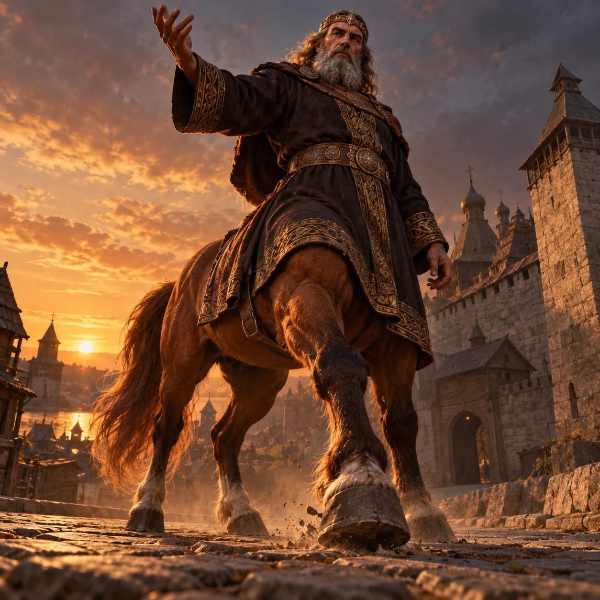
Unwinged centaur variant proclaiming wisdom in Lukorye.
Aura: Centaur anatomy c01/c02 and authoritative wisdom/reign c04.
Audit ciri dan sumber
- [object Object]
- [object Object]
Native1254+2007yes:1hybrid subject fillsframe;2lowcamera powerfulking/hoof at200;3striking raisedhoof and declarationgesture;4only physical hoofdust, no prophecyglow c04;5onehumantorso/head2arms continues intohorsebody4horselegs1tail, nohorsehead/riderlegs/wings c01/c02;6no text/frame/copiedIP/gore;7active sovereigncentaur distinct from ordinaryrider. Opaque robe/headband editorial costume, prophecy expressed as speakingauthority rather than invented effects.
Review sumberONE original square premium painterly cinematic Mitoloka illustration of Kitovras, the wise centaur-like king of Russian apocrypha.
ANATOMY: one centaur-like being: ONE male human torso and head, two human arms seamlessly rising from ONE horse body, exactly four horse legs, ONE horse tail; unwinged variant [kitovras-c01,c02]. Fully opaque dark antique ceremonial robe covers human torso and waist; horse body natural coat.
MOMENT: advance with one front hoof striking stone toward the low viewer, one hand raised in emphatic wise declaration, face stern and commanding [kitovras-c04].
POWER: no visible prophecy effect; wisdom through speaking gesture only [kitovras-c04].
SCALE & CAMERA: extreme low side three-quarter view, imposing hybrid dominates, horse-human junction and all four legs clearly separated, head turned toward viewer; no invented giant size.
LIGHT & WEATHER: one low copper evening sun, deep walnut shadows, real hoof dust.
SURFACE: rough horse coat, coarse opaque robe, stone paving.
SETTING: understated old city of Lukorye, dim city walls behind [kitovras-c04].
MOOD: awe-inspiring royal wisdom and power, never ordinary rider, cute or decorative.
HARD CONSTRAINTS: no text, lettering, logo, border, frame or watermark; no extra heads or limbs; no design from films, games, anime or comics; no nudity, no explicit gore; no generic glow aura, neon outlines, floating symbols or energy ribbons.